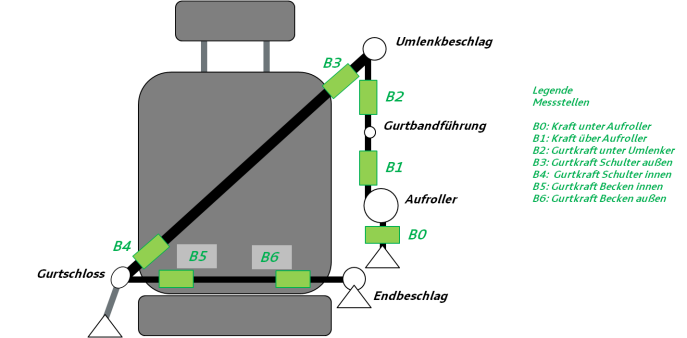
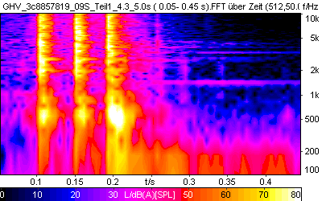
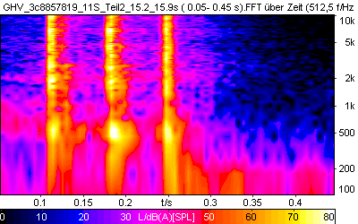
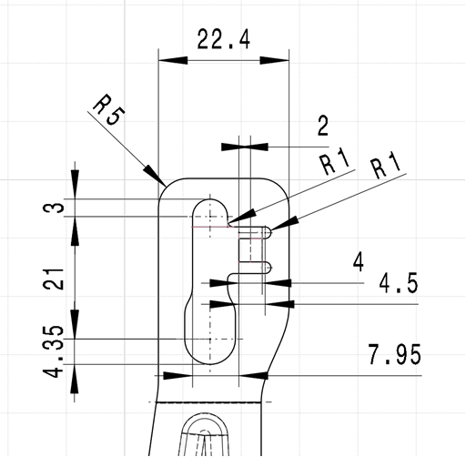
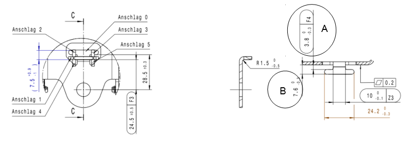
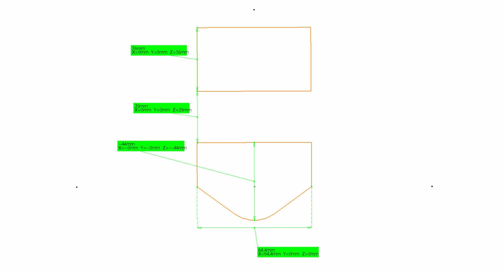
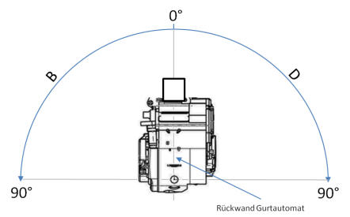
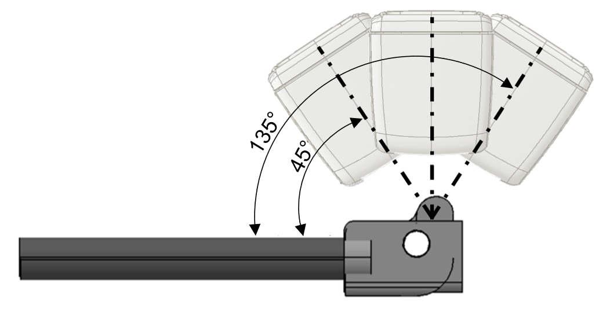
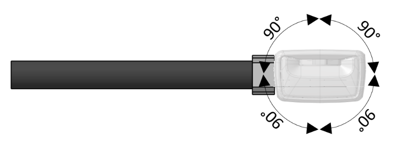
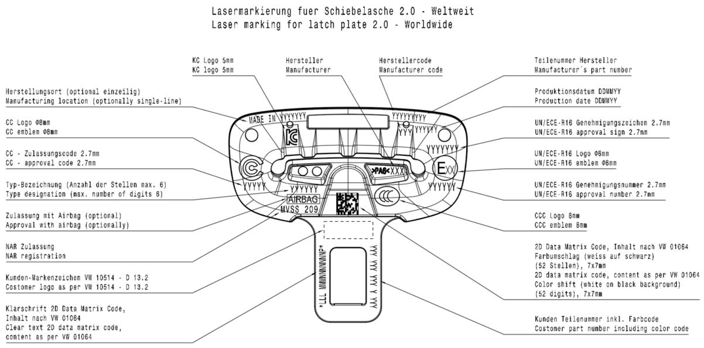

V33.00_BT-LAH_Final_Basismodul-TE-V33_Mai[redacted-ext]
Konzern-[redacted-person]
| [redacted]: LAH.DUM.857.D |
| Autor | Hasmüller, Benjamin |
| Abt./OE | [redacted-person]-31 |
| Telefon | [redacted-person] |
| [redacted-person] |
| Verteiler |
| [redacted-person]-31, [redacted] |
| EK/A3, Bentley, [redacted-person] |
| EKS1, [redacted] |
| EKS2, [redacted] |
| [redacted-person], Seat, [redacted-person] Saiz |
| EKS/3, Skoda, [redacted-person] |
| EKSR, Volkswagen, Pedro Da [redacted-person] de Almeida |
| NE-OKC, [redacted-co]Nutzfahrzeuge, [redacted-person] |
[I: BT-LAH[redacted-ext]]
Abstimmung
[I: BT-LAH-941]
Änderungsdokumentation
| Stand | Beschreibung der Änderung | Ersteller / Bearbeiter (Name, OE) |
|---|---|---|
Version 3.0 [redacted-person] des Lastenheftes |
[redacted-person] | |
| [redacted-person] | Version 3.0.1 - [redacted-person]-Vorlage (V20) - [redacted-person] AK-ZV 01 - Abweichung T-Haken bei Dimpeln hinzu - [redacted-person] hinzu - Schwankung der B0-Kraft am Automaten - 5.1.4.: [redacted-person] AK2+ Schnittstelle - Ergänzung AK-LV 104 in den mitgeltenden Unterlagen - Ergänzung KCC15 in Tabelle, Kap. 5.1.4 - Ergänzung in Prüfmatrix „Gurtstraffer“: „Straffweg s ≥ 75 mm nach Umsteuern (Leistungsred. Straffer)“ |
[redacted-person] |
| [redacted-person] | Version 4 [redacted-person]-Vorlage (V21) - Kap 2.6.1: Daten - [redacted-person] der ABG für ECE, Taiwan, China (CCC),Indien,brasilien, Japan hinzu - Kap 2.6.1: Entfall: Abgabe ABG-Antragsnummer für China (CCC) -Kap 5.1.1.3: [redacted-person] Steckzunge gemäss TAB.[redacted-phone]DK hinzu - Kap 5.1.2, 5.1.3, 5.1.4, 5.1.5: Grundmodulumfang, Variierungsumfang, [redacted-person] aktualisiert - Kap 5.1.2: KCA [redacted-person] (Module) aktualisiert - Kap 5.1.2. Anforderung „Die elektrischen Steckverbindungen sind mit Goldkontakten auszustatten“ hinzu Funktionsüberprüfungen sind zu erfüllen: TL82503 hinzu Bauteilfestigkeit ist gemäß LAH.DUM.857.BB nachzuweisen hinzu [redacted-person] Überwachung bei Schlössern mit elektrischen Funktionen Kap.5.1.4: KCC24, KCC25 hinzu; [redacted-person] am starren Halter hinzu Sensorlage B=18° aktualisiert.
Kap. 5.1.5: Entfall KCD11 Kap.6.3: TLs Aktualisierung Kap 8.2.: TL 82505 Rückhaltesystem; Gurtkraftbegrenzer; Anforderungen und Prüfungen hinzu Kap 8.3: LAH DUM 857 T Konzern-[redacted-person] Gurtstraffer (RGS) hinzu [redacted-person] |
[redacted-person] |
| [redacted-person] | Version 4.1 Kap. 5.1.4: NVH-Vorgaben aktualisiert: [redacted-person] der Eigenfrequenzen Anpassen der [redacted-person] des im Rohbau eingebauten Retraktors [redacted-person] und hinzufügen KCC25 Hinweis zu Schadgasen hinzu. |
[redacted-person] |
| [redacted-person] | Version 5 Kap. 5.1.13 Data-Matrix-Code [redacted-person] sind in den [redacted-person] Code einzubringen Kap.5.1.2: Aufnahme der Farbe des Gurtschlosskabels hinzu Kap.5.1.4: [redacted-person] KCC aktualisiert: für neue Retraktorgenerationen Für die Module KCC15, 16, 20, 21 und 22 sind die Maße des T-Hakens und der Einsatz der Dimpel für die jeweiligen Module mit der Fachabteilung abzustimmen. [redacted-person] Angabe im Sensorkatalog (C →18, statt B→18 Fehler unterlaufen in der V4.1) Kap.5.1.5 Endbeschläge: [redacted-person] hinzu. Kap.5.1.6 Umlenker: [redacted-person] für neue Umlenker aktualisiert Kap. 8.4 Querschnittslastenhefte: LAH 17A.857.C Kraftbegrenzer im Gurtschloss hinzu |
[redacted-person] |
| [redacted-person] | Version 6.0 Kap. 5.1.5 KCD – Endbeschläge: - Tabelle um KCD 14 erweitert - Absatz „[redacted-person] für den Hochleistungsendbeschlagstraffer (KCD 14)“ angepasst |
[redacted-person] |
| [redacted-person] | Kap 1.1 [redacted-person]: aktualisiert Kap 2.5 Angebotsumfang: Anforderungen aktualisiert Kap 2.6.3 Musterstände und Musterstückzahlen: Anforderungen aktualisiert Kap 5.1.3 KCB Gurthöhenversteller: [redacted] Kap 5.1.4 KCC – Gurtautomaten:[redacted-person] hinzu [redacted-person] hinzu Toleranzen KiSi/[redacted-person] angepasst [redacted-person] angepasst [redacted-person] T-Haken [redacted-person]-Test hinzu Kap 5.1.6.3 Steckzunge: Anforderung hinzu |
[redacted-person] |
| [redacted-person] | Version 6.1 Kap 2.8 Fachbereichs- bzw. projektspezifische DMU-Richtlinien Hinweis hinzu Kap 3.2.2 [redacted-person] hinzu Kap 5.1.4 KCC – Gurtautomaten: [redacted-person] T-Haken (gleicher Stand wie im LAH.DUM.857.D v5) Kapitel 6.8 [redacted-person] und [redacted-person] hinzu Kapitel 8 [redacted-person] Hinweis hinzu |
[redacted-person] |
| [redacted-person] | Version 7.0 Prüfmatrix EBSS überarbeitet Straffleistung mittels Kraftmessung hinzu [redacted-person] 2 (Wärmebildfilmaufnahme) hinzu Biegesteifigkeit 1 und 2 angepasst Torsions- und Biegewechseltest angepasst Kap. 5.1.5 KCD – Endbeschlagstraffer Kapitel überarbeitet Zielgewicht KCD14 hinzu Straffleistungsangaben bzgl. Straffkraft detailliert Absatz „Belastungswinkel & Seilauslenkungen“ hinzu |
[redacted-person] |
| [redacted-person] | Version 7.0 Neue LAH –Vorlage: V30.0_BT-LAH_Final_Basismodul-TE-V30_/Nov2019 Kap 2.6.4 Vertraulichkeitshinweis hinzu Kap 2.6.4 Typprüfung und Zertifizierung Anforderungen und Hinweise hinzu Kap.5.1.2 KCA – [redacted-person] Übersichtstabelle Kap 5.1.4 KCC – Gurtautomaten: [redacted-person] und [redacted-person] [redacted-person]-/ Gurtschlösser/ Angebotsfreigabe-matrix (Vereinheitlichung zu TL471/TL82500/TL82501/TL82502/TL82505) |
[redacted-person] |
| [redacted-person] | Version 7.2 Erweiterung um KCC26-30 wegen [redacted-person] mit elektr. Kugelsensor Kapitel 5.1.4 Übersicht der [redacted-person] ergänzt Kapitel 5.1.4 Gurtautomatenmodule mit elektr. Kugelsensor im Text ergänzt Kapitel 5.1.4 Abschnitt „Fahrzeugsensitivität“ Lastenheft für elektr. Kugelsensor ergänzt |
[redacted-person] |
| [redacted-person] | Version 8.0 Neue LAH-Vorlage: V33_BT-LAH_Final_Basismodul_TE_V33_Mai_2021 Kapitel 2.5 Angebotsumfang PDF statt Word => für Pflichtenhefte, Austausch via Requirement [redacted-person] zulässing Kapitel 2.6.1 & 2.6.4: UKCA hinzu Kapitel 5.1.1.1 Prüfungen: Alter und Dokumentation ergänzt Kapitel 5.1.2 KCA – Gurtschlösser - ergänzt und aktualisiert Kapitel 5.1.3 KCB – Gurthöhenversteller - angepasst Kapitel 5.1.4.8 [redacted-person] hinzu Kapitel 5.1.5 Gurtschlossstraffer ergänzt und aktualisiert Kapitel 5.1.6.2 Klemmsteckzunge ergänzt Kapitel 5.1.6.3 Schiebelasche vollständig überarbeitet Kapitel 5.14.1: Vorgaben für Rezyklate hinzu Kapitel 5.15.3 Korrosionsschutz – neu erstellt |
[redacted-person] |
| [redacted-person] | Version 8.1 Kapitel 2.4 – KV-Quote ZSB Gurtschlosskraftbegrenzer ergänzt Kapitel 2.5 – ISO/IEC 17025 Akkreditierung für Versuchslabore ergänzt Kapitel 2.6.4 – Gurtschlosskraftbegrenzer ergänzt Kapitel 5.1.4.4 – Anforderungen an zweiten Befestigungspunkt KCC Module ergänzt Kapitel 5.1.5 – Gurtschlosskraftbegrenzer (KCD16) ergänzt, Kapitel aktualisiert |
[redacted-person] |
| [redacted-person] | Version 8.2 Kapitel 5.1.5.7 – Bild hinzu, Schlosskopfausrichtung ergänzt Kapitel 2.7.1 / 8.4 – Qualitätslastenheft (LAH [redacted-phone]) wird ersetzt durch „Qualitätslastenheft zum Lieferanten- und Kaufteil- Management im [redacted-co]“ |
[redacted-person] |
| [redacted-person] | Version 9.0 Modulbezeichnungen angepasst Kapitel 2.6.1 GV4 und Note 3 aktualisiert Kapitel 5.1.5 [redacted-person] hinzu Kapitel 5.1.4.1 Anforderungen 2. Anschraubpunkt hinzu Kapitel 5.1.4.7 Kraftniveau mit [redacted-person] aktualisiert Kapitel 5.1.1.1 Anforderungen an Videos hinzu Kapitel 5.1.1.8 Emissionsverhalten neu erstellt - Anforderungen aus Kapitel 5.1.4.6 und Kapitel 5.1.5.4 zusammengefasst und ergänzt Kapitel 5.1.2 Anforderungen an [redacted-person] entfallen Kapitel 5.1.3.1 Anforderungen 2D [redacted-person] Code ergänzt Kapitel 5.1.5.7
Kapitel 5.1.6.1 PTL 8603 entfallen, wird durch TL 52454 ersetzt Kapitel 5.1.6.2 Klemmsteg vorzugsweise schwarz ohne Funktionsbeeinträchtigung Kapitel 5.1.6.3 [redacted-person] Bild hinzu Kapitel 5.1.6.4 Klemmkraftanforderung an Klemmsteckzungen ergänzt Kapitel 5.1.6.5 Knopfvarianten ergänzt |
[redacted-person] |
Inhaltsverzeichnis
2.1 Kurzbeschreibung des Entwicklungsumfanges 8
2.3 Zuordnung der Komponente 8
2.3.2 Einsatzort und Zielmarkt 8
2.4 Entwicklungs- und Lieferumfang 9
2.6.1 Terminplan und Meilensteine 11
2.6.2 Metriken zur Projektverfolgung 13
2.6.3 Musterstände und Musterstückzahlen 13
2.6.4 Typprüfung und Zertifizierung 15
2.7 Qualität und Zuverlässigkeit 18
2.7.2 Risikomanagement (FMEA und FTA) 19
2.8 Fachbereichs- bzw. projektspezifische DMU-Richtlinien 19
2.9 Für [redacted-co] gilt: Anforderungen an Kenntnisse im Produktdaten-Management 19
3 Projektmanagement und -organisation 19
3.1 Verantwortlichkeiten im Projekt und Projektstrukturplan 20
5.1 Definitionen und Anforderungen der Module 23
5.1.3 BCB – Gurthöhenversteller 31
5.1.7 Bauteilbezeichnung und Teilenummern 56
5.2 Block- und Prinzipschaltbild 56
5.3.1 Funktionsbeschreibung 57
5.8 Sicherheitsanforderungen 58
5.8.1 Personen- und Insassensicherheit 58
5.9 Alternativen und künftige Varianten 58
5.11.1 Einbauorte und Einbaulage 59
5.12 Formgestaltung und Design 60
5.14.2 Schmelzwerkstoffe (Hotmelts) 64
5.15 Medienbeständigkeit und chemische Anforderungen 64
5.15.1 Sauberkeitsanforderungen 64
5.17.2 Schwingungsverhalten 65
5.17.3 Steifigkeit und Federeigenschaften 65
5.17.4 Verformung und Deformation 65
5.19.1 Beschreibung der allgemeinen Anforderungen 66
5.21 Kundendienst- und After-Sales-Anforderungen 66
5.21.1 Kundendienstanforderung 66
5.21.2 After-Sales-Anforderungen 67
5.24 Qualitätssicherungsanforderungen 68
6 Anforderungen an Erprobung 68
6.1 Prüfmittel / Erprobungsträger 69
6.5 Testparameter und Zyklen 70
6.6 Beschaffenheit des zu testenden Musterstandes 70
6.8 [redacted-person] und Simulation 70
7 Definitionen, Begriffe, Abkürzungen 71
8.1 Zeichnungen, Pläne, Skizzen; Variantenbaum 74
8.3 Typprüfunterlagen, Vorschriften, Gesetze 79
8.4 Querschnittslastenhefte 79
8.5 Zu beachtende Schutzrechte und Lizenzen 80
Anhang 2: Abwicklung von Baumusterfreigaben 81
Anhang 3: Anforderungen an die Konstruktionsausarbeitung 82
[I: BT-LAH-4]
Das vorliegende Bauteil-Lastenheft (BT-LAH) ist angelehnt an die Struktur des VDA-[redacted-person] 2 (www.vda-qmc.de) und beschreibt komponentenspezifische Anforderungen. Das VDA-Modul 1 wird durch die [redacted-co]99000 abgebildet und beschreibt komponentenübergreifende allgemeine Anforderungen zur Leistungsbringung im Rahmen der Bauteilentwicklung.
[I: BT-LAH-13]
Die vom Auftragnehmer zu erfüllenden Anforderungen sind in der Identifikationsnummer (z. B: [A: BT-LAH-1]) grundsätzlich durch ein "A" gekennzeichnet. Textteile, die durch ein "I" gekennzeichnet sind, sind Informationen zum besseren Verständnis des BT-LAH. Gibt es keine Identifikationsnummer oder keine Kennzeichnung mit "A" bzw. "I", so handelt es sich ebenfalls um eine Anforderung.
[redacted-person] ist zu befolgen
[A: BT-LAH-5]
Das vorliegende Bauteil-Lastenheft und die Norm [redacted-co]99000 sind zusammen Grundlage des zu erbringenden Leistungsumfanges des Auftragnehmers.
[A: BT-LAH-6]
Dieses BT-LAH beschreibt Leistungen, Anforderungen, Prüf- und Erprobungsbedingungen, die das zu entwickelnde Produkt und der Auftragnehmer erfüllen müssen.
[redacted-person] umfasst Steuergeräte und Steuergerätesoftware oder Software für Steuergeräte, die in Fahrzeuge der [redacted-person] Elektrik ([redacted-prj]) [redacted-co] und der [redacted-co] zum Einsatz kommen werden.
Im Rahmen der Homologation von Fahrzeugen gewinnt Software zunehmend an Bedeutung. Gesetzeskonforme, den Anforderungen aus den Einsatzmärkten entsprechende Software steht insbesondere in den Zukunftsprojekten der [redacted-prj] im Fokus. Daher gehen wir davon aus, dass es auch [redacted-person] an einem mangelfreien Angebots-/Lieferumfang entspricht, dass im Falle einer [redacted]Leistungen diesen Anforderungen entsprechen. Im weiteren Verlauf der Anfrage und –soweit [redacted-person] mit Leistungen beauftragt wird –werden wir mit Ihnen gemeinsam unsere Detailanforderungen an die Dokumentation und Information rund um die Thematik gesetzeskonforme Software u.[redacted-person] Rahmen der Homologation unserer Fahrzeuge besprechen und vereinbaren.
[I: BT-LAH[redacted-ext]]
Vertraulich. [redacted-person] vorbehalten. Weitergabe oder Vervielfältigung ohne vorherige schriftliche Zustimmung des Fachbereiches der [redacted-person] verboten. Vertragspartner erhalten dieses Dokument nur über die zuständige Beschaffungsabteilung.
© [redacted-person]
Vor dem Hintergrund der neuen Fahrzeugprojekte, basierend auf der Modulstrategie, sollen neue ZSB-Sicherheitsgurtsysteme (u.[redacted-person], Gurtschlösser, Gurthöhenversteller…) entwickelt werden, welche eindeutige Verbesserungen hinsichtlich Sicherheit, Bedienbarkeit, Erreichbarkeit, Komfort, Gewicht, Geräusche, Abmessungen und Anmutung ergeben sollen.
Das vorliegende Lastenheft dient zur Festlegung der technischen Daten und Randbedingungen für den zu beschreibenden Leistungsumfang.
Im Rahmen der Entwicklung sind folgende Punkte zu berücksichtigen:
- Kostenoptimierung
- Variantenreduzierung
- Qualitätsverbesserung
- Preiskonstanz
- neue gesetzliche Vorgaben
- Recyclingkonzepte
[redacted-person] entsprechen den Preisen zum SOP inklusiv der erforderlichen Optimierungen und Anpassungen.
Die zu entwickelnden Komponenten müssen sämtliche gesetzliche und interne Anforderungen erfüllen mit einer Sicherheit von mindestens 20 %. Zusätzlich sind die Anforderungen hinsichtlich Verbrauchertests zu erfüllen (siehe [redacted-person] Frontrückhaltesystem des jeweiligen Fahrzeugprojekts).
[A: BT-LAH-21]
Bezeichnung des Zielfahrzeuges: siehe Lieferumfangslastenheft
[A: BT-LAH-22]
Entwicklungsauftragsnummer: siehe Lieferumfangslastenheft
[A: BT-LAH-25]
Zielmarkt: siehe Lieferumfangslastenheft
[A: BT-LAH-916]
Target: siehe Lieferumfangslastenheft
Es gelten die Anforderungen des Kapitels „Entwicklungs- und Lieferumfang“ der [redacted-co]99000.
[redacted-person] verpflichtet sich bei der Integration des Bauteils beim Auftraggeber mitzuwirken.
Im Rahmen der Forward-[redacted-person] wird über das Neuteilinformationsblatt die KV-Quote vorgegeben, welche im Rahmen der Vergabeverhandlungen vereinbart wird. (Gilt nicht für [redacted-co])
[A: BT-LAH-936]
Für [redacted-co] gilt:
Es gelten die Anforderungen der Konzeptverantwortungsvereinbarung. Für das / die Bauteil(e) gilt folgende Konzept-Verantwortungs-Quote:
Bauteil KV-Quote
ZSB-Gurtschloss 90 %
ZSB Gurtschlossstraffer 90 %
ZSB-Gurtschlosskraftbegrenzer 90 %
ZSB-Gurthöhenversteller 90 %
ZSB-Sicherheitsgurt 90 %
ZSB Endbeschlagstraffer 90 %
[A: BT-LAH-33]
[redacted-person] verpflichtet sich, alle Anforderungen dem Angebot als vereinbarte Beschaffenheit zugrunde zu legen. Abweichungen vom BT-LAH sind dem Angebot beizufügen und zu dokumentieren.
[redacted-person] muss eine vollständige, abgeschlossene [redacted-person] für alle Bauteile vorliegen.
Abweichungen von der Anfragematrix sind dem Angebot beizufügen und zu dokumentieren
[I: BT-LAH-837]
[redacted-person] eines Auftragnehmers muss dieser nach den konzernweit abgestimmten Bewertungskriterien des Auftraggebers (bauteilbezogene Beurteilung von Entwicklungspartnern) auditiert und zugelassen sein.
[redacted-person] ist die Entwicklungskapazität nachzuweisen.
[redacted-person] muss eine Mindestausstattung an Prüfvorrichtungen an einem Standort vorhanden sein. [redacted-person] wird mit der Fachabteilung abgestimmt.
[redacted-person] der passiven Sicherheit, die durch Versuchsdienstleister oder Lieferanten erfolgen und zur Bauteil- und/oder Funktionsfreigabe von Verbraucherschutz-, gesetzlichen Anforderungen sowie Selbstverpflichtungen dienen, sind grundsätzlich in einem nach ISO/IEC 17025 für diese Prüfungen akkreditierten Versuchslabor durchzuführen.
Prototypen- und Serienwerkzeuge müssen beim gleichen Lieferanten beauftragt werden. Abweichungen sind mit der Fachabteilung abzustimmen.
[A: BT-LAH-34]
Mit dem Angebot sind vom Auftragnehmer folgende Unterlagen den technischen oder zuständigen Fachabteilungen des Auftraggebers zur Prüfung vorzulegen:
[A: BT-LAH-35]
[redacted-person] muss die Liste der offenen Punkte und Abweichungen vom BT-LAH (analog zur Struktur des BT-LAH) mit den Angebotsunterlagen dem Auftraggeber zur Verfügung stellen.
[A: BT-LAH-36]
[redacted-person] muss das Pflichtenheft mit den Angebotsunterlagen dem Auftraggeber zur Verfügung stellen.
[A: BT-LAH-930]
[redacted-person] muss das Pflichtenheft in folgendem Dateiformat aushändigen:
PDF-Datei für LAH.DUM.857.D (Modullastenheft)
PDF-Datei für LAH.DUM.857.D (Prüfmatrix)
In Abstimmung mit dem Auftraggeber kann der Auftragnehmer die Lastenheftkommentierung sowie die Pflichtenheftableitung in Form eines Auszugs aus einem [redacted-person] Systems ableiten. [redacted-person] kann z.[redacted]
[A: BT-LAH[redacted-ext]]
[redacted-person] muss den Erfahrungsnachweis aus ähnlichen Projekten mit den Angebotsunterlagen dem Auftraggeber zur Verfügung stellen.
[A: BT-LAH[redacted-ext]]
[redacted-person] muss den Nachweis über ausreichende Entwicklungskompetenz bzw. Entwicklungskapazitäten mit den Angebotsunterlagen dem Auftraggeber zur Verfügung stellen.
[I: BT-LAH-38]
Die ausreichende Entwicklungskapazität ist durch den Bericht des letzten TE-[redacted-co]ts und eine Entwicklungs-Kapazitätsplanung über Projektlaufzeit, die auch Engpässe bei anderen Aufträgen des Auftragnehmers berücksichtigt, aufzuzeigen.
[A: BT-LAH[redacted-ext]]
[redacted-person] muss den Nachweis über die geforderte Ausrüstung im Versuch, Labor, CAD-Bereich mit den Angebotsunterlagen dem Auftraggeber zur Verfügung stellen.
[A: BT-LAH[redacted-ext]]
[redacted-person] muss den Erfahrungsnachweis im Prototypenbau (insbesondere bei sicherheitskritischen Bauteilen) mit den Angebotsunterlagen dem Auftraggeber zur Verfügung stellen.
[A: BT-LAH-41]
[redacted-person] muss den Projektstrukturplan gemäß [redacted-co]99000 mit den Angebotsunterlagen dem Auftraggeber zur Verfügung stellen.
[A: BT-LAH-42]
[redacted-person] muss den Projektterminplan gemäß [redacted-co]99000 mit den Angebotsunterlagen dem Auftraggeber zur Verfügung stellen.
[A: BT-LAH-43]
[redacted-person] muss das Montage- und Befestigungskonzept mit den Angebotsunterlagen dem Auftraggeber zur Verfügung stellen.
[A: BT-LAH-44]
[redacted-person] muss die Angaben zum Eigen- und Fremdanteil der Entwicklungsaktivitäten mit den Angebotsunterlagen dem Auftraggeber zur Verfügung stellen.
[A: BT-LAH[redacted-ext]]
[redacted-person] muss die Angaben zum Eigen- und Fremdanteil der Produktionsaktivitäten mit den Angebotsunterlagen dem Auftraggeber zur Verfügung stellen.
[A: BT-LAH-45]
[redacted-person] muss den Erprobungsplan/Testmanagement mit den Angebotsunterlagen dem Auftraggeber zur Verfügung stellen.
[A: BT-LAH-46]
Werkstoffkonzept aller Einzelbauteile (nur Werkstoffe, keine Reinstoffangaben erforderlich)
[A: BT-LAH-49]
[redacted-person] durchzuführende Simulationen
[A: BT-LAH[redacted-ext]]
Für [redacted-co] gilt:
Es ist der Nachweis zu erbringen, dass das in Kapitel "2.9 Anforderungen an Kenntnisse im Produktdaten-Management" geforderte Anforderungsprofil bereits erfüllt ist oder zum Zeitpunkt der Beauftragung erfüllt sein wird, z.[redacted-person] entsprechende Qualifizierungsnachweise.
[I: BT-LAH-59]
Der aktuelle Terminplan wird von der Beschaffung des Auftraggebers den Anfrageunterlagen beigefügt.
[A: BT-LAH-60]
Folgende vom Auftraggeber vorgegebenen Termine sind vom Auftragnehmer nach [redacted-co]99000 im Projektterminplan zu berücksichtigen.
[A: BT-LAH-62]
KW x : Verfügbarkeit A-Muster
[A: BT-LAH-63]
KW x : 3D-CAD-Datensatz
[A: BT-LAH-917]
KW x : [redacted-person]
[A: BT-LAH-918]
KW x : DDKM ([redacted-person]-Kontroll-Modell)
[A: BT-LAH-64]
KW x : Verfügbarkeit B-Muster
[A: BT-LAH-65]
KW x : Verfügbarkeit C-Muster
[A: BT-LAH-66]
KW x : Erstmuster
[A: BT-LAH-67]
KW x : Erstmuster-Prüfbericht
[A: BT-LAH[redacted-ext]]
KW x : Typprüfungsunterlagen (z.[redacted-person]'s, CCC, ...)
[A: BT-LAH-68]
KW x : Baumustergenehmigung
[A: BT-LAH-919]
KW x : P-Freigabetermin
[A: BT-LAH-920]
KW x : B-Freigabetermin
[A: BT-LAH-69]
KW x : 2-Tagesproduktion
[A: BT-LAH-70]
KW x : SOP
[A: BT-LAH[redacted-ext]]
Für allgemein bauartgenehmigungspflichtige Bauteile (ABG) sind vom [redacted-person] inkl. Testreport (z.[redacted-person] ECE, CCC, Taiwan) an den jeweiligen bauteileverantwortlichen Konstrukteur zu liefern, der es an die Typprüfabteilung der Marke (siehe auch [redacted-co]01155) weiterleitet.
[A: BT-LAH[redacted-ext]]
16 Wochen vor SOP ECE: Vorlage der ABG für ECE
[A: BT-LAH[redacted-ext]]
16 Wochen vor SOP Taiwan: Vorlage der ABG für Taiwan
[A: BT-LAH[redacted-ext]]
46 Wochen vor SOP (CCC): Vorlage der ABG-Antragsnummer für China
[A: BT-LAH[redacted-ext]]
25 Wochen vor SOP (CCC): Vorlage der ABG für China
[A: BT-LAH[redacted-ext]]
18 Wochen vor SOP Indien: Vorlage der ABG für Indien
[A: BT-LAH[redacted-ext]]
22 Wochen vor SOP Brasilien: Vorlage der ABG für Brasilien
[A: BT-LAH[redacted-ext]]
16 Wochen vor SOP Japan: Vorlage der ABG für Japan
[redacted-person] der Terminpläne des Einkaufs sind Terminpläne für die Bauteilentwicklung zu erstellen, die folgende Kerntermine berücksichtigen:
- Für die 2. Baustufe (GV2) müssen funktionsgerechte Teile vorliegen
- GV4 erste Teile aus Serienwerkzeugen
- 1 Jahr vor SOP/Teile für Freibewitterung
- Zur PVS werkzeugfallende und grundvermessene Teile aus Serienwerkzeugen in freigegebenen Serienwerkstoffen
- 16 Wochen vor 0-Serie müssen die Bauteile kundentauglich/serientauglich sein (ehemals Note 3) und Erstmusterprüfbericht für die BMG-Prüfungen vorliegen ([redacted-person] sind für die Prüfung 12 Wochen vorgesehen)
- 4 Wochen vor der 0-Serie müssen alle für die Baumustergenehmigung erforderlichen Prüfungen abgeschlossen sein und die BMG vorliegen
Für [redacted-co] gilt:
- 4 Wochen vor der PVS müssen alle für die Baumustergenehmigung erforderlichen Prüfungen abgeschlossen sein und die Baumustergenehmigungsempfehlung vorliegen ([redacted-person] sind für die Prüfung 12 Wochen vorgesehen)
- 6 Wochen vor 0-Serie muss der Erstmusterprüfbericht mit mind. Note 3 vorliegen
[A: BT-LAH-73]
[redacted-person] liefert im Rahmen der Fortschrittsberichte die erforderlichen Daten für folgende Metriken:
[A: BT-LAH-74]
Meilensteintrendanalyse basierend auf den vereinbarten Meilensteinen
[A: BT-LAH-75]
Vergleich der geplanten und der tatsächlichen Dauer der Aktivitäten und Arbeitspakete basierend auf dem Projektterminplan
[A: BT-LAH-76]
Fehlerverfolgung inkl. Priorisierung und Bearbeitungsstatus
[A: BT-LAH-77]
Weitere projektspezifische technische Metriken, die kritische Aspekte messen, werden zwischen den Projektverantwortlichen des Auftragnehmers und des Auftraggebers abgestimmt.
[redacted-person] des jeweiligen Fahrzeugprojekts.
[redacted-person] ist verpflichtet die Musterteile und Prototypenteile mit dem Modulumfang in der technischen Spezifikation entsprechend dem nominierten Zustand zu liefern.
[redacted-person] mit Modulen in einer abweichenden technischen Ausführung (ältere Generationsstände etc.) ist zu vermeiden.
Für die Fertigstellung von Standardmustern aus dem bestehenden Komponentenportfolio gibt es Bearbeitungszeit von 15 Arbeitstagen, 20 Arbeitstage dürfen nicht überschritten werden.
Wenn durch Verschulden des Lieferanten ein Terminverzug entsteht, werden alle dadurch entstehenden Folgekosten beim OEM (Verschiebung / Ausfall von Versuchen, Zusatzversuche, administrativer Aufwand) dem Lieferanten in Rechnung gestellt und durch den Lieferanten beglichen.
Zur B-Freigabe sind dem Auftraggeber zwei komplette Sätze des Gurtsystems inkl. aller benötigten Gurt-Komponenten in inerter Ausführung zu Verfügung zu stellen.
[A: BT-LAH-83]
x - Teile für Funktionsprüfungen
[A: BT-LAH[redacted-ext]]
x - Teile für Gesamtintegrationstest (inklusive der Teile für Verbauvorschrift, HILs, Referenzfahrzeug und weitere Prüforte)
[A: BT-LAH-84]
x - Teile für Einbauuntersuchungen
[A: BT-LAH-85]
x - Teile für Kundendienstlösungen
[A: BT-LAH-86]
x - Teile für Erprobungen (z.[redacted-person], Korrosion, Festigkeit, Akustik)
[A: BT-LAH-87]
x - Teile für Fahrversuch
[A: BT-LAH-88]
x - Teile für Dauererprobungen
[A: BT-LAH-89]
x - Teile für Fahrzeugdauerlauf
[A: BT-LAH-90]
x - Teile für Laboranalyse
[A: BT-LAH-922]
x - Teile für Vorbau/Vorderwagen
[A: BT-LAH-923]
x - Teile für Unterflurmodelle
[A: BT-LAH[redacted-ext]]
x - Teile für [redacted-person]-Matrix-Code (die Lesbarkeit und der Inhalt des Codes müssen verifiziert werden; die Musterteile sind der Qualitätssicherung des Auftraggebers kostenlos zur Verfügung zu stellen.)
[A: BT-LAH-93]
[redacted-person] von Mustern sind die Musterstände für ZSB bzw. Systeme, Einzelteile, Komponenten mit dem Auftraggeber abzustimmen.
[A: BT-LAH-94]
[redacted-person] muss mit dem aktuellen Stand (HW, SW, EEPROM, Mechanik) gekennzeichnet werden.
[A: BT-LAH-838]
[redacted-person] von 3D-CAD-Daten (digitaler Prototyp) hat zu einem definierten Zeitpunkt vor Lieferung der Musterteile zu erfolgen.
[A: BT-LAH-80]
Mindestens für alle geplanten Baustufen und Erprobungsfahrzeuge ist jeweils ein [redacted-person] anzuliefern.
[I: BT-LAH-839]
[redacted-person] über Fahrzeug-Anzahl und Aufbautermin (virtuell und physisch) sind unter Abschnitt "Terminplan und Meilensteine" festgelegt bzw. dem Prototypenbauplan zu entnehmen.
[A: BT-LAH-924]
Zu berücksichtigen sind auch Musterteile für Vorbau/Vorderwagen und Unterflurmodelle, falls packagerelevante Änderungen (laut [redacted-co]99000 Kapitel "Änderungsmanagement") an dort verbauten Bauteilen vorgenommen werden.
[I: BT-LAH-925]
[redacted-person] können sein:
Geometrieänderungen
Schlauchmarkierungen
Wechsel des Werkzeugentwicklungsstandes (Prototypen-Werkzeug, Serien-Werkzeug)
[A: BT-LAH-91]
Die genannte Anzahl an Musterteilen ist Bestandteil des Entwicklungsumfangs und muss vom Auftragnehmer in den Entwicklungskosten berücksichtigt werden. Die genannten Musterteile sind dem Auftraggeber ohne zusätzliche Berechnung und frei Haus anzuliefern.
[A: BT-LAH[redacted-ext]]
Für die Bauteile ist eine Kennzeichnung mit einem RFID-Transponder nach [redacted-co]01067 „Einsatz von Auto-ID zur eindeutigen Objektkennzeichnung“ gefordert.
[redacted-person] der Bauteile, für deren Muster RFID-Labels zu verwenden sind, halten die Marken vor.
[A: BT-LAH[redacted-ext]]
[redacted-person] übernimmt das Beschaffen, Beschreiben und Montieren der Transponder, sowie die elektronische Bereitstellung des geforderten Dokumentationsumfangs.
[A: BT-LAH[redacted-ext]]
[redacted-person] muss Fahrzeugteile und Originalteile (z.[redacted-person], After-[redacted-person]), welche nach weltweiten Gesetzen, z.[redacted-person], EG, Inmetro (Brasilien), eine Bauartgenehmigung und/oder einen Konformitätsnachweis (für funkbasierte Systeme) benötigen, abhängig vom Einsatzort/Zielmarkt und Fahrzeugmodell zertifizieren und mit der entsprechenden Identifizierung nach Gesetzesvorgabe kennzeichnen.
[A: BT-LAH[redacted-ext]]
[redacted-person], z.[redacted-person] ([redacted-person] Certification) und weitere, sind unabhängig vom Einsatzort/Zielmarkt und Fahrzeugmodell durchzuführen.
[A: BT-LAH[redacted-ext]]
[redacted-person], die nur im Markt NAR (Nordamerika) oder in Rechtslenker-Märkten eingesetzt werden, sind von der Pflicht der China-Zertifizierung ausgenommen.
[I: BT-LAH[redacted-ext]]
Für kennzeichnungs- und bauartgenehmigungspflichtige Märkte erfolgt die Zertifizierung und Kennzeichnung unter Verwendung eines Typisierungsnamens.
[A: BT-LAH[redacted-ext]]
[redacted-person] hinsichtlich der Kennzeichnungspflicht für den [redacted-person] sind in der Konzernnorm VW10511 beschrieben. Falls eine Nennung des Bauteilverwendungsbereichs („Typabgrenzung“) in den Bauartgenehmigungsdokumenten erforderlich ist, erfolgt diese ausschließlich durch den „[redacted-person]“ und/oder die verkürzte Konzernprojektbezeichnung.
[A: BT-LAH[redacted-ext]]
[redacted-person] muss die Zertifikate vor Ablauf ihrer jeweiligen Gültigkeit sowie bei Gesetzesänderungen aktualisieren und rechtzeitig unaufgefordert an den Auftraggeber liefern. Dies gilt über den gesamten Produktlebenszyklus, der auch den Zeitraum der Versorgungsverpflichtung von Originalteilen beinhaltet.
[redacted-person] sind sämtliche Dokumente zur Zulassung bzw. Nachtrag der Zulassung des Gurtsystems zur Verfügung zu stellen.
Zusätzlich sind zulassungsrelevante Unterlagen (technische Dokumente und Zeichnungen) dem Auftraggeber zur Baumusterfreigabe zur Verfügung zu stellen.
Bei zulassungsrelevanten Änderungen am Gurtsystem sind dem Zertifikatsinhaber sämtliche technische Unterlagen zur Verfügung zu stellen, um die Homologation bei der Behörde starten zu können.
Die für eine Zertifizierung von Baugruppen erforderlichen Arbeiten obliegen dem Leistungsumfang des Auftragnehmers.
[redacted-person] „ZSB-Sicherheitsgurt“ ist zertifikatspflichtig: Ja
[A: BT-LAH[redacted-ext]]
Für den [redacted]benötigt eine CCC-[redacted-person] inkl. [redacted-person]
[I: BT-LAH-98]
[redacted-person] „Sicherheitsgurte“ (mit od. ohne Straffer) ist typprüfpflichtig: Ja
[redacted-person] „Gurtschloss“ ist typprüfpflichtig: Ja
[redacted-person] „Gurtschlossstraffer“ ist typprüfpflichtig: Ja
[redacted-person] „Gurtschlosskraftbegrenzer“ ist typprüfpflichtig: Ja
[redacted-person] „Gurthöhenverstellung“ ist typprüfpflichtig: Nein
[redacted-person] „Endbeschlagstraffer“ ist typprüfpflichtig: Ja
[A: BT-LAH-99]
Bei typprüfpflichtigen Bauteilen sind zum Erfüllungsnachweis der gesetzlichen [redacted-person] in Absprache mit der zuständigen Typprüfabteilung des Auftraggebers, ggf. in Anwesenheit des [redacted-person] bzw. der Behörde, durchzuführen und zu dokumentieren.
[redacted-person] Sicherheitsgurte gemeinsam mit der Sicherheitsgurt-Höhenverstellung, den Gurtschlössern und dem Endbeschlagstraffer muss für die jeweiligen Zielmärkte beim Hersteller des Sicherheitsgurtes erfolgen.
Die CE-Zulassungsnummer für den Gasgenerator, sowie die UKCA-Zulassungsnummer für Gasgenerator/Gurtstraffereinheit muss vom Lieferanten spätestens zur B-Freigabe an die Fachabteilung übermittelt werden.
[redacted-person] nach UN-R16 muss vom Lieferanten 10 Wochen vor der PVS an die Fachabteilung der [redacted-person] sowie der Typprüfung übermittelt werden.
[I: BT-LAH[redacted-ext]]
[redacted-person] „Sicherheitsgurte“ ist selbstzertifizierungsrelevant: Ja
[redacted-person] „Gurtschloss“ ist selbstzertifizierungsrelevant: Ja
[redacted-person] „Gurtschlossstraffer“ ist selbstzertifizierungsrelevant: Ja
[redacted-person] „Gurtschlosskraftbegrenzer“ ist selbstzertifizierungsrelevant: Ja
[redacted-person] „Gurthöhenverstellung“ ist selbstzertifizierungsrelevant: Nein
[redacted-person] „Endbeschlagstraffer“ ist selbstzertifizierungsrelevant: Ja
[A: BT-LAH[redacted-ext]]
Für selbstzertifizierungsrelevante Teile muss eine gesetzeskonforme Dokumentation der geforderten meist experimentellen Nachweise der Gesetzeserfüllung durchgeführt und dem Auftraggeber zur Verfügung gestellt werden.
[I: BT-LAH[redacted-ext]]
[redacted-person] „Sicherheitsgurte“ ist ERC-pflichtig: Nein
[redacted-person] „Gurtschloss“ ist ERC-pflichtig: Nein
[redacted-person] „Gurtschlossstraffer“ ist ERC-pflichtig: Nein
[redacted-person] „Gurtschlosskraftbegrenzer“ ist ERC-pflichtig: Nein
[redacted-person] „Gurthöhenverstellung“ ist ERC-pflichtig: Nein
[redacted-person] „Endbeschlagstraffer“ ist ERC-pflichtig: Nein
[A: BT-LAH[redacted-ext]]
[redacted-person] muss Fahrzeugteile, welche nach den südkoreanischen gesetzlichen Vorgaben ERC-relevant sind, mit einem [redacted-person] Code (DMC) nach der Konzernnorm [redacted-co]01064 versehen.
[A: BT-LAH[redacted-ext]]
[redacted-person] der [redacted-person] Code-Beschriftung muss nach [redacted-co]01064 für Teileverbauprüfung (TVP) und Bauzustandsdokumentation (BZD) umgesetzt werden.
[I: BT-LAH[redacted-ext]]
[redacted-person] ist ein Zusammenbau und enthält als Unterkomponente ein ERC-relevantes
Bauteil: Nein
[A: BT-LAH[redacted-ext]]
Für ERC-relevante Bauteile im Zusammenbau (ZSB) hat der Auftragnehmer eine Teileverbauprüfung und Bauzustandsdokumentation nach [redacted-co]01064 für jede einzelne ERC-relevante Komponente durchzuführen.
[A: BT-LAH[redacted-ext]]
[redacted-person] als Ganzes muss ebenfalls einen [redacted-person] Code nach [redacted-co]01064 erhalten, über welchen die Teileverbauprüfung und Bauzustandsdokumentations-Daten der Unterkomponenten zurückverfolgt werden können.
[A: BT-LAH[redacted-ext]]
[redacted-person] sind diese Daten dem Auftraggeber zur Verfügung zu stellen.
[redacted-person] muss sicherstellen, dass die Forderung nach § 4.7.3 (Alle am Fahrzeug angebrachten Warnhinweise müssen zwingend in chinesischer Sprache verfasst sein) von der chinesischen Vorschrift GB [redacted-phone]erfüllt wird.
Die aktuellen Warnhinweise müssen somit durch Piktogramme ersetzt werden.
Für pyrotechnische Aktuatoren:
[A: BT-LAH[redacted-ext]]
Es gelten die Formel-Q Dokumente mit ihren Unterdokumenten. [redacted-person] muss sich der Auftragnehmer mit dem zuständigen QS-BTV oder QS-Produkttechniker abstimmen.
[A: BT-LAH-104]
[redacted-person]: 0 Liegenbleiber (LB) und 0 Schadensfälle (SF) sowie 0-km-Ausfälle mit 0 ppm
[A: BT-LAH-928]
Für [redacted-co] gilt:
[redacted-person] und Planung muss vom Auftraggeber vorgegebene Prüftechnologien und -konzepte berücksichtigen.
[redacted-person] der FMEA sind vom Auftragnehmer zur P-Freigabe vorzustellen
[A: BT-LAH[redacted-ext]]
Es wird ein rechtsdrehendes Koordinatensystem gemäß [redacted-co]01052 verwendet.
[redacted-person]: siehe Lieferumfangslastenheft
[I: BT-LAH[redacted-ext]]
Für [redacted-co] gilt:
Zur prozesssicheren Einsteuerung von Entwicklungsergebnissen in die Systeme des Auftraggebers sind Grundkenntnisse über das Produktdaten-Management ([redacted]) unerlässlich.
[A: BT-LAH[redacted-ext]]
Für [redacted-co] gilt:
[redacted-person] des LAH.[redacted-phone]AF „Anforderungsprofil für die Beauftragung von technischen Regeln zur Aufnahme im System MBT“ sind zu erfüllen.
[A: BT-LAH-122]
[redacted-person] muss Applikationsingenieure, die im eigenen Hause ausschließlich für das beschriebene Einzelprojekt aktiv sind, vorsehen.
[A: BT-LAH[redacted-ext]]
[redacted-person] muss Resident-Ingenieure, die am Entwicklungsstandort des Auftraggebers ausschließlich für das beschriebene Einzelprojekt aktiv sind, vorsehen.
[A: BT-LAH-123]
[redacted-person] muss, für die Applikations- und die Resident-Ingenieure die notwendigen Mess- und Applikationssysteme stellen.
[A: BT-LAH[redacted-ext]]
[redacted-person] muss bei Erprobungsfahrten des Auftraggebers eine Unterstützung vor Ort sicherstellen.
[A: BT-LAH-124]
[redacted-person] muss die Teilnahme der Applikationsingenieure an den Erprobungsfahrten mit dem Auftraggeber abstimmen.
[A: BT-LAH-126]
Die gesamte Dokumentation ist vom Auftragnehmer in deutscher Sprache auf muttersprachlichem Niveau (korrekte Rechtschreibung, Grammatik und Verständlichkeit) zu erstellen. Eine englische Version der Dokumentation ist je nach Konzern-Marke zulässig.
[A: BT-LAH[redacted-ext]]
[redacted-person] von im Internet verfügbaren maschinellen Übersetzungsdiensten ist aus Gründen der Geheimhaltung, des Datenschutzes und Schutz des geistigen Eigentums untersagt.
[A: BT-LAH-127]
[redacted-person] muss die jeweils aktuelle Dokumentation des Entwicklungsstandes spätestens alle x Wochen dem Auftraggeber zur Verfügung stellen.
[A: BT-LAH-166]
Zu jeder Lieferung eines neuen Standes des Bauteiles (Hardware, Software und/oder Mechanik) muss den zuständigen Fachabteilungen des Auftraggebers eine Mustermappe in einem vom Auftraggeber vorgegebenen Format und Übertragungsweg übergeben werden.
[A: BT-LAH-167]
Mit mindestens folgendem Inhalt:
Deckblatt mit folgendem Inhalt: [redacted-person], Teilebezeichnung, [redacted]Mechanik-Stand (z.[redacted-person]), Projektleitername des Auftragnehmers, Unterlageninhaltsverzeichnis, Stand des Lastenheftes, Stand des Pflichtenheftes
[A: BT-LAH-168]
Kurzbeschreibung bzw. Informationen mit folgenden Angaben:
alle Änderungen gegenüber vorherigem Stand, die Notwendigkeit der
Änderung, die Auswirkung der Änderung
[A: BT-LAH-171]
Teilelebenslauf, Pflichtenheft, Mess- und Prüfberichte (inkl. Toleranzanalyse, Simulationsergebnis, Prüfbericht über Werkstoffanforderungen, Herstellungsverfahren
[A: BT-LAH-179]
[redacted-person] sind innerhalb von 5 Arbeitstagen nachzureichen.
[redacted-person].
[A: BT-LAH[redacted-ext]]
[redacted-person] ist intern verwendungsbeschränkt. Intern
verwendungsbeschränkte Bauteile enthalten Know-How des Auftraggebers.
[redacted-person] zu intern verwendungsbeschränkten Bauteilen sind
ausschließlich zur Verwendung durch den Auftragnehmer an dessen
Entwicklungsstandort
bestimmt.
[A: BT-LAH[redacted-ext]]
[redacted-person] muss sicherstellen, dass Daten nicht, ohne vorherige Zustimmung des Auftraggebers, an andere Standorte des Auftragnehmers weitergegeben werden.
[A: BT-LAH[redacted-ext]]
[redacted-person] an andere Standorte des Auftragnehmers weitergegeben werden müssen, muss der Auftragnehmer zuvor die schriftliche Zustimmung des Auftraggebers einholen.
[A: BT-LAH[redacted-ext]]
[redacted-person] muss die Weitergabe der Daten an andere Standorte auf solche Daten beschränken, welche für die reine Fertigung notwendig sind
[I: BT-LAH[redacted-ext]]
Im Falle von Zuwiderhandlungen erhebt der Auftraggeber eine
Vertragsstrafe in Höhe von EUR 50.000, --. [redacted-person] wird auf
eine eventuelle Schadenersatzverpflichtung
angerechnet.
[A: BT-LAH[redacted-ext]]
Sollte ein Datenaustausch mit anderen Standorten notwendig werden, muss der Auftragnehmer einen Ansprechpartner benennen, der einen Datenaustausch mit dem Bauteilverantwortlichen des Auftraggebers abstimmt.
Für alle Systemkomponenten gilt, dass die zu diesem Lastenheft gehörenden aktuellen Zeichnungsstände zugrunde gelegt werden müssen.
Die projektspezifische Ausprägung des Gurtsystems ist im jeweiligen Lieferumfangslastenheft beschrieben.
Für alle Systemkomponenten gilt, dass die zu diesem Lastenheft gehörenden aktuellen Zeichnungsstände zugrunde gelegt werden müssen.
Die projektspezifische Ausprägung des Gurtsystems ist im jeweiligen Lieferumfangslastenheft beschrieben.
[I: BT-LAH-846]
Kapitel für mechanische Baugruppen nicht belegt.
[redacted-person] müssen alle im LAH genannten Spezifikationen (siehe auch Prüfmatrix im Anhang) erfüllen.
[redacted-person] und deren Interpretation sind schriftlich und in elektronischer Form anhand von Versuchsberichten mit Fotos zu dokumentieren und an die Fachabteilung zu übergeben.
[redacted-person] dürfen nicht älter als ein Jahr sein.
In den Versuchsberichten ist die Prüfstands-Bezeichnung, die Prüfstands-Nummer, sowie die letzte Qualifizierung/Zertifizierung des Prüfstands aufzuführen.
Für alle Standversuchsvideos gilt eine Mindestlaufzeit von 200 ms, für alle Schlittenversuchsvideos gilt eine Mindestlaufzeit von 300 ms.
[redacted-person] im Fahrzeug sind zu berücksichtigen.
Die im nachfolgenden Text aufgeführten Messstellen sind in der folgenden Prinzipdarstellung verdeutlicht.

Abb. [redacted-person]-Messstellen am Gurtsystem (gemäß ISO TS13499 – 2014)
[redacted-person]-Bauteile:
Im Folgenden werden mehrere Varianten zur Darstellung des Data-Matrix-Codes aufgezeigt.
Es gelten die Vorgaben des Auftraggebers, welche Variante zum Einsatz kommt (siehe fahrzeugspezifisches Lastenheft).
[redacted-person] eines Data-Matrix-Codes ist dieser scanbar sowie gemäß [redacted-co]01064 / Ausführung A2 zu gestalten. [redacted-person] muss der Data-Matrix-Code auch im eingebauten Zustand scanbar sein.
[redacted-person] sind in den [redacted-person] Code einzubringen.
Der auf dem Data-Matrix-Code angegebene Sortenschlüssel ist beim zuständigen Konstrukteur zu erfragen. [redacted-person] der Teilenummer zieht eine Änderung des Sortenschlüssels nach sich. [redacted-person] des Data-Matrix-Codes für handelsübliche Scanner muss vom Lieferanten gewährleistet werden.
Layout und Inhalt sind projektspezifisch mit der Fachabteilung abzustimmen und der entsprechenden Zeichnung zu entnehmen.
Ausführung mit Label: [redacted-person] „Schwarz“, Schriftfarbe „Weiß“.
[redacted-person]: Abzugskraft F ≥ 150 N
[redacted-person] Schiebelasche/Klemmsteckzunge: Lasergravur mit Farbumschlag.
(siehe TAB.[redacted-phone]DK oder Bauteilzeichnung ZSB Gurtretraktor)
Es ist eine Aufrollerbeschriftung vorzusehen.
[redacted-person] müssen auf der Beschriftung enthalten sein:
Verbauort (links, rechts)
Fahrerplatzorientierung (Rechtslenker, Linkslenker)
Karosserievariante (2-türer, 4-türer..)
Markt (z.[redacted-person] oder NAR)
Die o.[redacted-person] sind auf dem Typenlabel (Aufkleber) des Gurtaufrollers schwarz auf weiß zu hinterlegen.
Beispiel:
[redacted-person]-Bauteile:
[redacted-person] für die Prototypenkennzeichnung muss an beiden Enden zum Gurtband angenäht sein. Das folgende Label wird für die Beschriftung von Prototypen-Teilen verwendet:
[redacted-person] soll eine weiße Schrift auf einem schwarzen Hintergrund betragen. [redacted-person] soll als Aufkleber und/oder als Label erstellbar sein.
[redacted-person]-Teilen muss nach Abstimmung mit der Fachabteilung anstelle des Labels die Technologie RFID als Teile-Kennzeichen verwendet werden. [redacted-person] soll nach [redacted-co]01067 umgesetzt werden.
Für alle elektrischen und pyrotechnischen Komponenten ist der Nachweis der elektromagnetischen Verträglichkeit (EMV) gemäß [redacted-co]80150 und [redacted-co]80152 zu erbringen.
[redacted-person] des jeweiligen Fahrzeugs.
[redacted-person] für die Entwicklung eines Fahrzeuges ist im Lieferumfangslastenheft definiert.
Da die Verantwortung der Zulassung für das Gurtsystem dem Gurtlieferanten obliegt, müssen die jeweiligen erforderlichen Teile (z.[redacted-person] Gurtschloss und ZSB Endbeschlagstraffer) von den Entwicklungspartnern kostenfrei zur Verfügung gestellt werden.
[redacted-person], die mit dem Gurtband interagieren, dürfen keine scharfen Kanten haben, die zum Verschleiß oder Reißen des Gurtbandes führen.
[redacted-person] sind so auszulegen, dass ausgestoßene heiße Gase keine Materialien oder elektrischen Leitungen anzünden können, die sich in der Umgebung befinden (TL 82501). Bei keinem Zündversuch dürfen Flammen oder mögliche brandauslösende Stoffe austreten. [redacted-person] zur Flammen- und Partikelvermeidung erforderlich sind, dürfen diese keine Vergrößerung der BCx-Bauräume hervorrufen.
[redacted-person] muss azidfrei sein, es sei denn es liegt ein abgedichteter Brennraum vor. Außerdem dürfen nur Gasgeneratoren verwendet werden, die einen nach aktuellem Stand der Technik geringstmöglichen Anteil CO im Abgas entwickeln ([redacted-person]). Bei abgedichteten Systemen dürfen herkömmliche Gasgeneratoren verwendet werden.
Eine mögliche Gesundheitsgefährdung muss ausgeschlossen werden.
[redacted-person] ist mit dem Auftraggeber abzustimmen.
Es sind nur Treibsätze zulässig, die kein PSAN (Phasen Stabilisiertes Ammonium Nitrat) enthalten.
Neuentwicklungen von [redacted-person] dürfen keine höheren Schadgasemissionen aufweisen als das aktuelle System.
[redacted-person] sind im ZSB gemäß [redacted-co]80151 nachzuweisen. [redacted-person] der 25 % für die Gurtkomponenten ist wie folgt festgelegt:
- 1.SR 10 %
- 2.SR 10 %
- 3.SR 5 %
[redacted-person] dient zur Ermittlung der Gaskonzentrationen, die nach der Zündung eines ZSB-Gurtaufrollers (Straffung und ggf. Kraftniveauschaltung) oder ZSB-Endbeschlagstraffers (Straffung) in einem Fahrzeuginnenraum-Luftvolumen entstehen.
[redacted-person] des Gurtaufrollers oder Endbeschlagstaffers und einer Wartezeit von einer Minute ist über einer 30-minütigen Einwirkzeit der Mittelwert der jeweils vorhandenen Gaskonzentrationen aufzuzeigen.
HINWEIS: Für sämtliche im Fahrzeug verbauten Gurtkomponenten mit Pyrotechnik gelten die Anforderungen der VW80151 "[redacted-person] im Gesamtfahrzeug" hinsichtlich des [redacted-person]-konzentrationen.
[redacted-person] der Gurtaufroller bzw. Endbeschlagstaffer erfolgt über eine geeignete Zündvorrichtung mit Konstantstromquelle. [redacted-person] der Gurtaufroller bzw. Endbeschlagstaffer erfolgt in einer 2,5 m3-Kammer, die in ihrer Breite / Länge / Höhe annähernd kubisch ist.
[redacted-person] der Gaskonzentrationen erfolgt wahlweise über zwei Messaufbauten. Wird ein alternativer Prüfaufbau mit 60-Liter-Kammer genutzt, müssen die Ergebnisse auf die 2,5 m3 Kammer umgerechnet werden.
Für die Cl2-und HCI-Messung werden geeignete Drägerröhrchen (Querempfindlichkeiten sind zu berücksichtigen) benötigt. Für die NO- und NO2-Messung ist die CLD ([redacted-person] Detection) oder ein geeignetes IR-Messgerät zu verwenden. Für alle anderen Schadgase sind IR (Infrarot) Messgeräte anzuwenden. Vorzugsweise ist die FTIR ([redacted-person] IR) Messtechnik zu verwenden. [redacted-person] dieser Messgeräte sind parallel innerhalb der 30 Minuten durchzuführen.
[redacted-person], welches in der Lage ist, alle Gase parallel zu messen.
[redacted-person] A: Fluorpolymere (z.[redacted-person], Teflon usw.)
[redacted-person] B: beheiztes Edelstahlrohr TTL [redacted-person]: max. 5 mm Länge: max. 5 m
Die CLD erfolgt ohne Filter, bei allen anderen Geräten ist ein Filter mit £5 mm Porenweite zu verwenden. Die NO- und NO2-Messungen sind ohne Filter durchzuführen.
Messort: ist mit dem Auftraggeber abzustimmen
Prüftemperaturen: RT (23 +5) °C
Vorbereitung
[redacted-person] wird 5 Minuten vor der Zündung der Messaufbau über Raumluftmessungen stabilisiert, das Modul muss sich hierbei nicht in der Kammer befinden. [redacted-person] oder Endbeschlagstraffer wird in einer 2,5 m3-Kammer auf einem Gestell entsprechend der Fahrzeugeinbaulage befestigt (siehe Abschnitt 6.5). In der 2,5 m3-Kammer herrscht Umgebungsluft. [redacted-person] bzw. Endbeschlagstraffer wird in der Kammer, die druckdicht verschlossen ist, über eine geeignete Spannungsquelle zur Zündung gebracht. Aus dieser Kammer werden gegebenenfalls die Proben für die weiteren Analysen entnommen. [redacted-person] sowie die Umgebungstemperatur der Kammer sollen unmittelbar vor der Zündung RT betragen.
Gasanalyse
[redacted-person] haben (60 +5) s nach der Zündung des Moduls in der 2,5 m3-Kammer zu erfolgen, wobei nach der Zündung des Gurtaufrollers bzw. Endbeschlagstraffers die nach der Zündung entstehenden Gase in der Kammer nicht verwirbelt werden dürfen (wie z.[redacted-person] einen Ventilator). [redacted-person] sind über einem Zeitraum von 30 Minuten durchzuführen. Anschließend ist der Mittelwert zu bilden.
Messaufbau A
Bei der Messung mittels Drägerröhrchen wird in 5-minütigem Abstand eine Messung durchgeführt, wobei die Querempfindlichkeiten zu berücksichtigen sind. [redacted-person] erfolgt direkt aus der Kammer, z.[redacted-person] einen Bypass. Bei der CLD erfolgt die Volumenentnahme in der Größenordnung ³1,2 l/min, bei der FTIR Messtechnik ist ein Volumenstrom vom 0,5 bis 2,5 l/min zu wählen.
Messaufbau B
Bei einem Massenspektrometer ist ein Volumenstrom vom ca. 10 l/min zu wählen.
| Modul- kenn-zeichen |
Grundmodul = Schlosskopf | Modulpackage | Variierungsumfang | Steckzunge | Applikationsumfang | ||||||
|---|---|---|---|---|---|---|---|---|---|---|---|
| Größe | Schock- sicherheit |
Schalter | Schalter-typ | [redacted-person] | max. Gewicht [g] |
Beleuch-tung | |||||
| BCA11 nicht zukunftsfähig |
AK | nein | nein | - | RAL3000 | 90 | nein | ENT.[redacted-phone]A Altern. 11 |
-
Schlosskopf-Kodierung - Halterart (starr, teilflexibel, Gurtband) - Halteranbindung - Stecker e-Schnittstelle |
AK | - Federelemente Halter element (Filz) |
| BCA12 nicht zukunftsfähig |
AK | ja | nein | - | RAL3000 | 90 | nein | ENT.[redacted-phone]A Altern. 12 |
AK | ||
| BCA13 nicht zukunftsfähig |
AK | nein | ja | 0/∞Ω [redacted-phone]Ω |
RAL3000 | 110 | nein | ENT.[redacted-phone]A Altern. 13 |
AK | ||
| BCA14 nicht zukunftsfähig |
AK | ja | ja | 0/∞Ω [redacted-phone]Ω |
RAL3000 | 110 | nein | ENT.[redacted-phone]A Altern. 14 |
AK | ||
| BCA18 | klein | ja | nein | - | RAL3020 | 77 | nein | ENT.[redacted-phone]A Altern. 18 |
verkürzt - 4mm |
||
| BCA20 | klein | ja | ja | 0/∞Ω | RAL3020 | 80 | nein | ENT.[redacted-phone]A Altern. 20 |
verkürzt - 4mm |
||
| BCA21 | klein | ja | ja | [redacted-phone]Ω | RAL3020 | 80 | nein | ENT.[redacted-phone]A Altern. 21 |
verkürzt - 4mm |
||
| BCA22 | klein | ja | nein | - | RAL3020 | 90 | ja | ENT.[redacted-phone]A Altern. 22 |
verkürzt - 4mm |
||
| BCA23 | klein | ja | ja | 0/∞Ω | RAL3020 | 95 | ja | ENT.[redacted-phone]A Altern. 23 |
verkürzt - 4mm |
||
| BCA24 | klein | ja | ja | [redacted-phone]Ω | RAL3020 | 95 | ja | ENT.[redacted-phone]A Altern. 24 |
verkürzt - 4mm |
||
Sowohl für kodierte als auch für nicht kodierte Gurtschlösser ist der vorgegebene Bauraum einzuhalten.
Die BCA Modulbauräume sind unter der Bauteilnummer ENT.[redacted-phone]A im Hyper KVS archiviert. Unter der Alternative 500 ist die Vorgabe für das kodierte Gurtschloss zu finden.
Es ist beim Gurtschlosskopf sicherzustellen, dass kein Einblick auf innen liegende Bauteile möglich ist und dass keine Bauteile herausragen. Abweichungen von dieser Vorgabe sind mit dem Auftraggeber abzustimmen.
[redacted-person] und eine Bauzustandsdokumentation sollen außerhalb des Schlosskopfes am ZSB (z.[redacted-person]) angebracht werden. Abweichungen sind mit den entsprechenden Fachabteilungen abzustimmen. [redacted-person] der Kennzeichnung ist gegebenenfalls der TAB.[redacted-phone]bzw. der projektspezifischen ZSB Gurtschlosszeichnung zu entnehmen.
[redacted-person] erfolgt am Gurtschlosshalter. Insbesondere die vorderen Gurtschlosshalter sind mit einem Schrumpfschlauch, mit einer Abdeckkappe oder nach Vorgabe des Fachbereiches zu verkleiden.
[redacted-person] eines elektrischen Schalters können folgende Schaltertypen zum Einsatz kommen:
Nicht-diagnosefähiger elektrischer Schalter (0/∞ Ω):
Wenn der Gurt nicht angelegt ist (Schiebelasche nicht gesteckt), ist der Schalter geschlossen (d.[redacted-person] = Öffner).
Projektspezifisch kann in Ausnahmefällen ein 0/∞ Ω Schalter als Schließer
ausgeführt werden, wenn technische Randbedingungen dies erfordern.
Diagnosefähiger elektrischer Schalter [redacted-phone]Ω):
Wenn der Gurt nicht angelegt ist (Schiebelasche nicht gesteckt), ist der Schalter offen (d.[redacted-person] = Schließer).
Zur automatischen Fehlererkennung im Fahrbetrieb sind in diesem [redacted-person] eingebaut.
[redacted-person]-Schalter ist ohne BCA-Bauraum-Vergrößerung vorzuhalten.
[redacted-person] wird im fahrzeugspezifischen Lieferumfangslastenheft definiert.
| Widerstand: | R1 R2 |
100 Ohm ± 1 % (am Stecker ± 4 %) 300 Ohm ± 1 % (am Stecker ± 4 %) |
mind. 250 mW mind. 250 mW |
| Schalter | S1 + S2 | 2-15 V (zwischen Kontakt 1 und 2) | 5 mA-30 mA (von Kontakt 1 nach 2) |
[redacted-person] (Schalterfeder) ≥1,4 N
Kabel rund 2 x 0,35 – 0,5 mm2
Bei allen Gurtschlössern mit elektrischem Schalter ist eine Zugentlastung zu realisieren, die
folgende Anforderungen erfüllt:
Bei einem statischen Zug unter Raumtemperatur bei einer Kraft von 70 N über eine Zeitspanne von 1 min. an der Leitung muss die Funktion des Schalters voll erhalten bleiben.
Die elektrischen Schalter sind nach dem Prüfablaufplan auf Basis der [redacted-co]80000 zu qualifizieren (siehe Anhang).
Für die Schalter soll folgende IP-Klassen umgesetzt werden:
IP42 für 0/∞ - Schalter
IP52 für [redacted-phone]Ohm - Schalter
[redacted-person] sind in Abstimmung mit der jeweiligen Fachabteilung des Auftraggebers abzustimmen.
Es ist sicherzustellen, dass bei überdrückter Drucktaste der Schalter nicht umschaltet.
Außerdem darf der Schalter bei Betätigung der Drucktaste ohne Lösevorgang nicht umschalten.
Poligkeit und Anzahl der Kontakte sowie Auslegung der Schalterkontakte haben in Abstimmung mit der Fachabteilung des Auftraggebers zu erfolgen.
Die elektrischen Steckverbindungen sind mit Goldkontakten auszustatten.
Bei elektrischen Gurtschlössern ist die Litzenummantelung unter dem Schlosskopf und im [redacted-person] prozessbedingt sichtbar.
[redacted-person] ist schwarz auszuführen. Sollte dies nicht möglich sein, sind mit der jeweiligen Fachabteilung dunkle dezente Farbtöne abzustimmen.
[redacted-person] eines beleuchteten Gurtschlosses ist die technische und optische Auslegung, die Funktionslogik und die Anbindung an das Bordnetz mit der jeweiligen Fachabteilung des Auftraggebers abzustimmen.
[redacted-person] gelten neben der in der Prüfmatrix und in der TL 82503 aufgeführten Geräuschanforderungen insbesondere folgende Anforderungen:
Im Fahrbetrieb muss sowohl der Gurtschlosskopf als auch der Verbund aus Gurtschlosskopf und Schiebelaschen in Längs- und Querrichtung quietsch- und klapperfrei sein.
[redacted-person] durch das Gurtschloss und Umgebungsbauteilen muss ein Filzaufkleber auf der Gurtschlosskappe technisch umsetzbar sein.
[redacted-person] der Geräusche erfolgt im Fahrzeugaufbau durch die entsprechende Fachabteilung des Auftraggebers.
[redacted-person] sind zu erfüllen:
siehe TL 471 / TL 82503
abweichend / ergänzend zur TL 471 / TL 82503 sind die in der Prüfmatrix aufgeführten Tests durchzuführen
Zu überwachende Prüfungen:
[redacted-person] mit elektrischem Schalter muss während der gesamten Prüfung eine Überwachung durchgeführt werden.
[redacted-person] ist gemäß LAH.DUM.857.BB zur P-/B- Freigabe und ggf. zur BMG rechnerisch nachzuweisen.
| Modul- kennzeichen |
Grundmodul = GHV | Modulpackage | Variierungs-umfang | ||||
|---|---|---|---|---|---|---|---|
| Verstellung | Verstellweg | Stufen | Anbindung | max. Gewicht [g] |
|||
| BCB11 | mechanisch | 70,5 mm | 4-Rasten | 2 Haken 1 Bohrung |
310 | ENT.[redacted-phone]B Altern. 11 |
- Komfortfeder |
| BCB13 | elektrisch | 70,5 mm | stufenlos | 2 Haken 1 Bohrung |
700 | ENT.[redacted-phone]B Altern. 13 |
|
| BCB14 | mechanisch | 70,5 mm | 4-Rasten | 2 Haken 1 Bohrung |
220 | ENT.[redacted-phone]B Altern. 14 |
|
Die ZSB Gurthöhenverstellung ist für den verdeckten Einbau im Fahrzeug, nach kosten-, gewichts- und bauraumoptimierten Gesichtspunkten zu entwickeln.
Gilt nur für VW-Nutzfahrzeuge und [redacted-co]PKW: eine [redacted-person] ist vorzuhalten.
[redacted-person] ist mit einem 2D [redacted-person] Code gemäß [redacted-co]01064 zu beschriften. [redacted-person] in Klarschrift sind der Zeichnung zu entnehmen.
[redacted-person] ist crashtauglich für sämtliche Gesetz- und Verbraucherschutztests, komfort- und geräuschoptimiert sowie mit separater Entriegelung (außer BCB13) auszuführen.
[redacted-person] muss die, im Fahrbetrieb auftretenden, Beschleunigungen und Anregungen ohne Schaden überstehen und darf hierbei keine störenden Geräusche verursachen.
Es ist bei der geometrischen Gestaltung auf die Anforderungen der FMVSS 201 zu achten.
Die technischen Grundanforderungen des Systems sind in der TL 471 / TL 82502 und der beigefügten Prüfmatrix zur mechanischen und elektrischen Gurthöhenverstellung definiert.
Die GHV erfüllt die Vorgaben zum Brennverhalten gemäß TL 1010.
[redacted-person] von Schmierstoffen ist gemäß TL 745 zulässig. [redacted-person] zwischen Schmierstoff und Gurtband ist nicht zulässig.
[redacted-person] der im Konzern verwendeten Gurtumlenker muss erfüllt werden.
[redacted-person] mit entsprechenden Toleranzen entnehmen Sie bitte den [redacted-person] (TAB.[redacted-phone]K) und der Bauteilzeichnung.
[redacted-person] müssen die [redacted-co]50180 erfüllen und geruchsneutral sein (PV 3900) sowie die chemische Anforderungen nach LAH.[redacted-phone]erfüllen.
Alternativ: Ein rastenloses bauraumneutrales Verriegelungsprinzip ist zulässig.
[redacted-person] hat über das gesamte vorgegebene Temperaturband und Klimabedingungen alle Funktionsanforderungen in Bezug auf Sicherheit, Bedienbarkeit und Geräuschverhalten zu erfüllen.
[redacted-person] für die elektrische Gurthöhenverstellung befinden sich in den Lastenheften LAH.3F0.857.B und LAH.DUM.857.K.
[redacted-person] besitzt einen oberen Schraubpunkt (M8 – Innenantrieb) zum Rohbau. Das untere Ende der GHV schuht mittels zweier Haken an der Unterseite des Schienenprofils in den Rohbau ein.
[redacted-person] des Verkleidungsschiebers ist im Modul BCB14 (siehe ENT.[redacted-phone]B Alt. 14) definiert.
[redacted-person] besitzt rohbauseitig maximal einen Anschraubpunkt.
[redacted-person] und die Einbaulage der Gurthöhenverstellung sind den jeweiligen im Lieferumfangslastenheft definierten ENT´s zu entnehmen.
[redacted-person] und Form der Befestigungspunkte ist dem Modulbauraum (ENT.[redacted-phone]B) zu entnehmen.
[redacted-person] sind so zu befestigen oder auszulegen, dass ein Klappern an anderen Bauteilen unter Berücksichtigung aller Toleranzen nicht auftreten kann.
[redacted-person] ist als Gleichteil links / rechts auszuführen.
[redacted-person] der Schnittstellen zur Verkleidung ermöglicht eine Blindmontage der B-Säulenverkleidung (Einführschrägen).
Werkstoffe, insbesondere metallische Verbindungselemente zur Befestigung der Teile an der Karosserie, sind so zu wählen, dass keine Korrosion in Verbindung mit den benachbarten Teilen auftritt.
[redacted-person] der GHV erfolgt in:
- mech. GHV: unterster Position. Dazu ist eine Transportsicherung vorzusehen.
- eGHV: mittlerer Position.
[redacted-person] der Transportsicherung an der Oberseite der Führungsschiene sind nicht zulässig (Gurtbandbeschädigung).
Der maximale Schalldruckpegel beim Verstellen der Gurthöhenverstellung darf einen Wert von 90 dB(A) auf dem Prüfstand nicht überschreiten. Zusätzlich sind Nachhalleffekte wie beispielsweise Federschwirren mit entsprechenden Maßnahmen zu unterbinden. [redacted-person] (Rastgeräusch) sowie der Anschlag des Verstellteils in den Endlagen entsprechen einem satten, dumpfen und kurzen Ton.


Beispiel für schlechte Akustik (metallischer Nachhall) Beispiel für gute Akustik (satt, ohne Nachhall)
Bei der Werkstoffauswahl ist die Wiederverwertbarkeit zu beachten. Es muss vom Auftragnehmer eine Demontageanweisung und eine Handhabungsvorschrift für den Umgang mit der Gurthöhenverstellung erstellt werden ([redacted-co]91102 Beiblatt 3) und der Bemusterung beiliegen.
Neben der Normreihe [redacted-co]91100 ist auch auf geltendes Recht und zukünftige Gesetze zu achten. [redacted-person] ist gemäß EU-[redacted-person]-Verordnung einzuhalten.
| Modul- kennzeichnen |
Grundmodul | Sperrseite | Modul- package |
||||||||
|---|---|---|---|---|---|---|---|---|---|---|---|
| Wickelkapa. [mm] |
GKB | Einbau | Straffer | Wicklung | RGS | Sensor-nachführung | elektr. Kugelsensor |
max. Gewicht [g] |
|||
| BCC11 | 2250 | konstant | gemäß Sensor- |
nein | Standard | nein | nein | nein | 550 | rechts | ENT.[redacted-phone] Altern. 11 |
| BCC12 | 3000 | konstant | nein | Standard | nein | nein | nein | 560 | ENT.[redacted-phone] Altern. 12 |
||
| BCC13 | 2250 | konstant | nein | Reverse | nein | nein | nein | 600 | ENT.[redacted-phone] Altern. 13 |
||
| BCC15 | 2250 | konstant | ja | Standard | nein | nein | nein | 890 | ENT.[redacted-phone] Altern. 15 |
||
| BCC16 | 2250 | 2-stufig hoch -> niedrig |
ja | Standard | nein | nein | nein | 1200 | ENT.[redacted-phone] Altern. 16 |
||
| BCC18 | 2250 | konstant | ja | Standard | nein | nein | nein | 870 | ENT.[redacted-phone] Altern. 18 |
||
| BCC19 | 2250 | konstant | ja | Reverse | nein | nein | nein | 870 | ENT.[redacted-phone] Altern. 19 |
||
| BCC20 | 2250 | 2-stufig hoch -> niedrig |
ja | Standard | ja | nein | nein | 1800 | ENT.[redacted-phone] Altern. 20 |
||
| BCC21 | 2250 | ohne | nein | Standard | nein | ja | nein | 870 | ENT.[redacted-phone] Altern. 21 |
||
| BCC22 | 2250 | ohne | nein | Standard | nein | nein | nein | 425 | ENT.[redacted-phone] Altern. 22 |
||
| BCC23 | 2250 | - progressiv - mit Stopp |
ja | Standard | nein | nein | nein | 880 | ENT.[redacted-phone] Altern. 23 |
||
| BCC24 | 2250 | - progressiv - mit Stopp |
ja | Reverse | nein | nein | nein | 880 | ENT.[redacted-phone] Altern. 24 |
||
| BCC25 | 2250 | konstant | ja | Standard | ja | nein | nein | 1800 | ENT.[redacted-phone] Altern. 25 |
||
| BCC26 | 2250 | - progressiv - mit Stopp |
sitzlehnenintegriert | ja | Standard | nein | nein | ja | 880 | ENT.[redacted-phone] Altern. 26 |
|
| BCC27 | 2250 | 2-stufig hoch -> niedrig |
ja | Standard | ja | nein | ja | 1800 | ENT.[redacted-phone] Altern. 27 |
||
| Variierungsumfang | ||
|---|---|---|
| Endbeschlag/ Koppelstelle / Schlaufe | (Klemm-)Steckzunge, vernähte Steckzunge | Umlenker |
| Applikationsumfang | |||
|---|---|---|---|
| Gurtbandtyp (TL 52454 A und G) | Gurtbandlänge | Geräuschschutzkappe | KiSi |
| Sensor / Sensorlage | Kraftbegrenzerniveau | Gurtbandführung (beweglich/starr) |
Triebfeder |
| Knopf (klein/groß) / Entklapperungsschlaufe/Verstelllasche | Torsionstab | Gewinde / Durchgangsloch | [redacted-person] |
| Parametersatz (RGS) | Wickelabdeckung | ||
Wenn neue Retraktorgenerationen für den [redacted-co] angeboten werden sollen, ist die Bauteilfunktion über Simulation und die Schlittenversuche gemäß der Angebotsfreigabematrix nachzuweisen.
Es müssen alle gesetzlichen Anforderungen (ECE sowie NAR) mit einer Restwickellänge von 2250mm erfüllt werden. Geschieht das nicht, ist eine alternative Lösung (z.B ein Stopp) kostenneutral von dem Lieferanten zur Verfügung zu stellen.
[redacted-person] KiSi darf keine Vergrößerung der BCC-Bauräume hervorrufen.
Für die KiSi-Schaltpunkte und [redacted-person] gelten die in der TL 82500 definierten Toleranzen.
[redacted-person] der Schiebelasche auf der Seitenverkleidung kann u.[redacted-person] eine Gurtband-Schlaufe vermieden werden. Falls diese von der Fachabteilung gefordert wird, soll die Schlaufe wie auf der nebenstehenden Abbildung beschrieben umgesetzt werden. [redacted-person] der Schlaufe ist mit der Fachabteilung zu definieren.
RGS-spezifische Anforderungen sind im LAH.DUM.857.T zu entnehmen.
Eine an die Fahrzeug- bzw. Einbaugeometrie angepasste und komfortoptimierte Gurtführung am Retraktor darf sich im Fahrbetrieb bei Bremsbelastung bei einer Kraft unterhalb von 1 kN nicht vom Gurtautomat lösen.
Gurtbandführungen sind nach Vorgabe des Lieferumfanglastenheftes entweder starr oder schwenkbar auszuführen. Gurtführungen am Retraktor sind nach Vorgabe der Fachabteilung einzubringen. [redacted-person] an die Karosserie oder den Sitz erfolgt über die Verschraubung nach [redacted-co]80150.
[redacted-person] darf keinen scharfen Kanten aufweisen, die zur Schädigung des Gurtbandes über Lebensdauer führen.
Für den „quick-fix“ Endbeschlag sind die Angaben zu Federkennlinie der Zeichnungs-Nr. 8K[redacted-phone]zu entnehmen.
Endbeschlagabdeckungen für sitzfeste Endbeschläge müssen entsprechend der Farbgebung der Sitzabdeckungen farbangepasst ausgeführt werden.
Für die Gurtaufroller BCC 16/20/25/27 ist ein zweiter Anschraubpunkt gefordert (u.[redacted-person] IIHS2023). Dieser soll aus Metall ausgeführt werden und muss an lasttragenden Aufrollerbauteilen befestigt werden. Die obere Anschraubgeometrie ist mit einem Langloch gemäß der Zeichnung unterhalb auszuführen. Außerdem gelten folgende weitere Anforderungen an den zweiten Anschraubpunkt.
[redacted-person] muss mindestens die Scherkraft der Schraube übertragen können (>M6, projektabhängig)
[redacted-person]/Bruchlast zwischen dem Halter/Lasche und dem Aufroller muss kleiner sein, als die Versagenskraft der Schraube
Es muss eine Geometrie im Halter vorgesehen werden, um bei Zugbelastung eine Längung von 15mm zu ermöglichen
[redacted-person] an den 2. Anschraubpunkt sind zur P-Freigabe mittels Simulation und zur B-Freigabe durch Zugversuche nachzuweisen.

[redacted-person] müssen derart stabil ausgelegt sein, dass es beim nominalen Anzugsmoment +15 % beim Anschrauben im Fahrzeug zu keinem Verzug und somit zu keinen Schleif- bzw. Rattergeräuschen kommt. Das nominale Anzugsmoment ist im jeweiligen fahrzeugspezifischen Lieferumfangslastenheft definiert.
Für den Gurtautomaten sind alle Codierungen, sowie deren Kombinationen (Anschlag 0 bis 5) sowie eine Variante ohne Flügel, kostenneutral anzubieten. [redacted-person] sind auf der folgenden Abbildung zu entnehmen.

Für den Verbau von Gurtautomaten in der Lehne ist eine Abstellung am Rahmenblech entsprechend ENT.[redacted-phone](Alternative 21 und 22) als Verdrehsicherung vorzusehen.
[redacted-person] von Dimpeln weichen die folgenden Maße ab:
- Kreis A soll 4,8 mm [+0 / -0,3 mm] betragen
- Kreis B soll 8,6 mm [+0 / -0,3 mm] betragen
Für die Module BCC11, 12, 13, 18, 19, 23, 24 und 27 ist das Maß F4=4,8 mm [+0 / -0,3 mm] umzusetzen.
Für die Module BCC15, 16, 20, 21, 22, 25 und 26 sind die Maße des T-Hakens und der Einsatz der Dimpel für die jeweiligen Module mit der Fachabteilung abzustimmen.
[redacted-person] zum Schutz des Gurtwickels ist vorzusehen, damit ein Blockieren der Retraktorwelle durch Kontakt mit der Umgebung (z.[redacted-person], Dämmmaterialien B- od. C-Säule…) immer ausreichend verhindert wird. [redacted-person] wird in der technischen Matrix / im Lieferumfanglastenheft definiert.
[redacted-person] der Anschlussstellen ist in dem oben genannten Datensatz festgelegt. [redacted-person] der Anschlussstellen für die Zündleitungen des Gurtstraffers und ggf. des schaltbaren Gurtkraftbegrenzers wird durch die Fachabteilung im jeweiligen Projekt definiert. Am Gurtautomaten sind Kabelführungen bzw. Clipse vorzusehen, so dass das Kabel des Fahrzeugleitungssatzes so am Automaten geführt wird, dass eine Interaktion des Kabels mit dem Gurtband oder dem Gurtwickel ausgeschlossen ist.
Die elektrischen Schnittstellen werden erst im eingebauten Zustand gesteckt. [redacted-person] ist am Retraktor zu gewährleisten.
[redacted-person]-/Rückzugskennlinie im Tragebereich und im abgelegten ist gemäß TL 82500 zu gewährleisten
[redacted-person] muss in Einbaulagen und in allen Benutzungsstellungen aufrollen.
Für die Gurte hinten außen muss der Gurtaustrittspunkt für Straffer und nicht [redacted-person] immer gleichbleiben (ggf. durch Einsetzen einer Gurtbandführung)
[redacted-person] des Gurtautomaten ist immer mittig zum Gurtband auszulegen.
[redacted-person] ist nicht zulässig.
Sollten durch die Geometrie bzw. Massenverteilung des Gurtautomaten störende Geräusche bei der Benutzung des Fahrzeugs auftreten, z.[redacted-person] beim Schließen der Tür oder im Fahrbetrieb, oder sollten sich bei den Dauerversuchsprüfungen gem. Kap. 6.4.1 Ermüdungserscheinungen (z.[redacted-person]) im Karossenanbindungsblech/Sitzanbindungsblech zeigen, so sind kostenneutral geeignete Maßnahmen, z.[redacted-person] Vorspannung/Dimpel, die dieses Verhalten verhindern, umzusetzen.
Es sind sogenannte „Dimpel“ am Gurtautomatgehäuse so anzubringen, dass diese einen maximalen Abstand in X und Y vom Anschraubpunkt einnehmen, wie auf folgender Grafik dargestellt. [redacted-person] ist abhängig von der Entfernung zum Anschraubpunkt. Trotz möglicher Toleranzen muss sichergestellt werden, dass die Variation der Höhen der Dimpel minimal gehalten wird und keinen Einfluss auf die Geräuschentwicklung hat.
[redacted-person]:

[redacted-person] des Gurtautomats wird seitens der Fachabteilung vorgegeben. Seitens des Lieferanten muss sichergestellt sein, dass die durch die Dimpel erzeugte Sensorlage die Fahrzeugssensitivität nicht beeinflusst, die nötige Steifigkeit durch eine Simulation erreicht wird und die Funktionstüchtigkeit der Retraktoren bei einem potenziellen Verzug des Rahmenbleches bei dem nominalen Anzugsmoment nicht beeinflusst wird. Für den im Rohbau eingebauten Retraktor sind 40 Hz für die 1. Sitzreihe sowie 60 Hz für die hinteren Sitzreihen mittels einer simulativen Eigenmodenauslegung des Retraktors zu erreichen.
Die ersten Eigenmoden sind positions- und typabhängig der unten gezeigten Tabelle am starren Halter zu entnehmen. Für globale Moden gilt: die erste globale Mode kann sowohl eine Biege-, als auch eine Translationsmode sein.
|
|
|
|---|---|---|
|
|
|
|
|
|
|
|
|
|
|
|
|
|
|
Tabelle: erste Eigenmoden der Retraktortypen in Abhängigkeit der Einbaulage
Für die Einbauposition 1. Sitzreihe ist die Verwendung von Dimpeln mit der Fachabteilung bei Auffälligkeiten abzustimmen, für die hinteren Sitzreihen sind Dimpel einzusetzen.
Mit der Fachabteilung sind die aktuellen konstruktive Rahmenbedingungen abzustimmen.
[redacted-person] eines Filzes auf dem Gurtautomat muss technisch umsetzbar sein.
[redacted-person] müssen die Anforderungen nach TL 82500 erfüllen. Falls nicht anders im Lieferumfanglastenheft definiert, gilt die Klasse 2 als Konzernanforderung. [redacted-person] sind gegebenenfalls vorzusehen.
Bei einem auffälligen, nicht linearen Verhalten der Sonewerte in Abhängigkeit der Anregungsamplitute des Retraktors, die zu einer Auffälligkeit im Fahrzeug führen, ist eine kostenneutrale Abstellmaßnahme zur Verfügung zu stellen.
Abweichungen von dieser Forderung sind mit der jeweiligen Marken-Fachabteilung abzustimmen.
[redacted-person] von Gurtendbeschlägen ist gemäß LAH.DUM.857.BB zur P-/B- Freigabe rechnerisch nachzuweisen.
[redacted-person] des Aufrollers werden im Konzern in den Bereichen aus der folgenden Tabelle ausgewählt:
| A | B/D |  C |
|---|---|---|
| 0 | B = 25 | 0 |
| ↕ | ||
| D = 25 | ||
| 90 | - | n/a |
| n/a | - | 90 |
| 0 | 0 | 18 |
| ↕ | ||
| 25 | ||
| 0 | 0 | Sensornach-Führung (0°-45°) |
Auswahl von [redacted-person] Definition für die Sensorlage
Wenn die Position des Aufrollers im Fahrzeug nicht mit einem mechanischen Sensor umsetzbar ist, kann ein elektrischer Sensor eingesetzt werden. [redacted-person] sind im Lastenheft LAH.DUM.857.EN beschrieben.
[redacted-person], für die Sensoren, die als „neu“ in der Anfragematrix gekennzeichnet sind, sind im Teilepreis abgegolten.
Es gelten die Anforderungen der TL 82505: Rückhaltesystem/Gurtkraftbegrenzer/
Anforderungen und Prüfungen für die [redacted-person]
Es müssen folgende Gurtkraftniveaus für die Fahrzeugauslegung wählbar sein:
konstanter Gurtkraftbegrenzer:
Bereich nominales Kraftniveau B0= 1,5 kN bis 7,0 kN bei 800 ± 25 mm
Restwickel
[redacted-person]: (2-stufig
hoch --> niedrig)
Oberes GKB-Niveau bei schaltbarem Gurtkraftbegrenzer:
Bereich nominales Kraftniveau B0 = 3,5 kN bis 7,0 kN bei 800 ± 25 mm mm
Restwickel
Unteres GKB-Niveau bei schaltbarem Gurtkraftbegrenzer:
Bereich nominales Kraftniveau B0 = 1,5 kN bis 3,5 kN bei 800 ± 25 mm Restwickel
[redacted-person]:
GKB-Niveau bei oberem Gurtkraftbegrenzer:
Bereich nominales Kraftniveau B0 = 3,0 kN bis 6,0 kN bei 800 ± 25 mm
Restwickel
GKB-Niveau bei unterem Gurtkraftbegrenzer:
Bereich nominales Kraftniveau B0 = 2,0 kN bis 4,0 kN bei 800 ± 25 mm Restwickel
Gurtkraftbegrenzer mit Stopp:
Bereich nominales Kraftniveau B0 = 2,0 kN bis 6,0 kN bei 800 ± 25 mm
Restwickel
GKB-Niveau bei progressivem Gurtkraftbegrenzer:
Kraftniveau B0 steigend nach x Umdrehungen (x wird im Projekt festgelegt)
[redacted-person]:
Bereich nominales Kraftniveau B0 = 3,0 kN bis 5,5 kN bei 800 ± 25 mm
Restwickel
GKB-Niveau bei progressivem Gurtkraftbegrenzer:
Bereich nominales Kraftniveau B0 = 5,5 kN bis 8,0 kN bei 800 ± 25 mm Restwickel
Prinzipdarstellungen von den unterschiedlichen Gurtkraftbegrenzern
(1)
(2)
(3)
(4)
(5)
Wenn nicht laut Anfrageunterlagen anders vorgegeben, gilt generell die Leistungsklasse 2 (aus
TL 82501)
Für den Einsatz der Retraktorstraffer in Kombination mit einer weiteren Straffen (z.[redacted-person]) gelten weitere Anforderungen an die dynamische Performance. Die notwendigen Prüfungen sind in der Angebotsmatrix definiert und müssen zur Angebotsfreigabe gesondert nachgewiesen werden.
| Modul- kennzeichen |
Grundmodul | Modulpackage | Variierungsum-fang | ||||||
|---|---|---|---|---|---|---|---|---|---|
| Einbauort | Einbauart | Straffer | elektr. Schnitt-stelle | Koppel-stelle | Anbindungs-punkte | max. Gewicht [g] |
|||
| BCD12 | robaufest/ sitzfest |
starr | ja / linear |
ja | ja/nein | 2 | 550 | ENT.[redacted-phone]G Altern. 12 |
Bordnetzanbin-dung (Direktsteckung, Adapterleitung) [redacted-person]-blech (2. Anschraubpunkt, Rohbauanbin-dung) Entklapperung Koppelstellenan-bindung |
| BCD13 | robaufest/ sitzfest |
starr | ja / rotato-risch |
ja | ja/nein | 1 | tbd. | ENT.[redacted-phone]G Altern. 13 |
|
| BCD14 | robaufest/ sitzfest |
starr | ja / linear |
ja | ja/nein | 2 | 650 | ENT.[redacted-phone]G Altern. 14 |
|
| BCD15 | robaufest/ sitzfest |
starr | ja / linear |
ja | Schloss-kopf | 2 | 600 | ENT.[redacted-phone]G Altern. 15 |
|
| BCD16 | robaufest/ sitzfest |
starr | nein | nein | Schloss-kopf | max. 2 | tbd. | ENT.[redacted-phone]G Altern. 16 |
|
[redacted-person]-, Gurtschlossstraffer und Gurtschlosskraftbegrenzer müssen die in der jeweiligen zutreffenden Prüfmatrix aufgeführten Anforderungen erfüllen.
Für die jeweilige Ausführung sind die Abdeckungen (für Straffer, Drahtseil, Gurtbandverlauf und Koppelstelle) und die Anbindung des Gurtbandes an den Straffern projektspezifisch mit dem Auftraggeber abzustimmen.
[redacted-person] / der Gurtschlosskopf darf sich in eingebautem Zustand nicht um ihre Längsachse verdrehen (siehe Prüfmatrix).
[redacted-person] eines Endbeschlagstraffers soll FB6 = 3,5 kN (+0,5 /-0,5) kN zum Zeitpunkt
t1 = 200 [redacted-person] (siehe TL 82501).
[redacted-person] aus der Prüfmatrix an den Straffweg und die Straffleistung dürfen durch einen gegebenenfalls notwendigen Seilschutz (z.[redacted-person]) bzw. durch einen Verzögerungsdämpfer (z.[redacted-person]) nicht eingeschränkt werden. Die in der TL 82501 angegebenen Leistungsdaten beziehen sich für Neuentwicklungen, Modulfreigaben und Angebotsfreigaben des Endbeschlagstraffers nach den Vorgaben der TL.
Zur B-Freigabe (DV) müssen die Werte für die Pflichtenhefteintragung für die jeweiligen Fahrzeugapplikationen ermittelt, abgeglichen und begründet werden.
[redacted-person] ist für Straffer erforderlich und muss auf der Komponente umgesetzt werden.
Die BCD Modulbauräume sowie der zulässige Effektivpunktbereich sind im Hyper KVS unter ENT.[redacted-phone]G archiviert. [redacted-person] von Effektivpunkten ist nur mit Genehmigung durch den Konzern und einer erneuten Angebotsfreigabe möglich.
[redacted-person] ist darauf zu achten, dass der Endbeschlagstraffer auch im Sitzquerrohr (Ø ist in der Fachabteilung abzufragen) verbaut werden kann und eine Steckbarkeit gewährleistet ist.
[redacted-person] ist gemäß den Anforderungen der Prüfmatrix (siehe Anhang, EBSS und GSS) zur P-/B- und BMG mittels Versuch nachzuweisen. Sind in der frühen Entwicklungsphase noch keine Versuchsteile verfügbar, kann ein Festigkeitsnachweis auch mit einer Berechnung nachgewiesen werden.
Sollten durch die Geometrie störende Geräusche bei der Benutzung des Fahrzeugs auftreten, z.[redacted-person] beim Schließen der Tür oder im Fahrbetrieb, oder sollten sich bei den Dauerversuchsprüfungen gem. Kap. 6.4.1 Ermüdungserscheinungen (z.[redacted-person]) im Anbindungsblech zeigen, so sind kostenneutral geeignete Maßnahmen, die dieses Verhalten verhindern, umzusetzen. [redacted-person] gilt für alle BCDs. Für die Koppelstelle ist ein Klapperschutz vorzusehen.
[redacted-person] sind so auszulegen, dass unter Berücksichtigung der maximal auftretenden Auslenkungswinkel bzw. maximal auftretenden Seilauslenkungen bei Belastungen bis zu 15 kN keine Krafteinbrüche auftreten. [redacted-person] bzw. Brechen von Strafferteilen ist erst oberhalb von 15 kN zulässig.
[redacted-person] sind so auszulegen, dass unter Berücksichtigung der maximal auftretenden Auslenkungswinkel bzw. maximal auftretenden Seilauslenkungen bei Belastungen bis zu 20 kN keine Krafteinbrüche auftreten. [redacted-person] bzw. Brechen von Strafferteilen ist erst oberhalb von 20 kN zulässig.
Hierzu sind die verschiedenen Anordnungskonzepte im Fahrzeug mit den angegebenen Winkeln zu berücksichtigen:
Befestigung am Schweller: Strafferrohr in Fahrtrichtung nach vorne (Fahrerseite)
Befestigung am Schweller: Strafferrohr in Fahrtrichtung nach hinten (Fahrerseite)
Befestigung am Schweller oder in B-Säule in Kombination mit einem Umlenker
[redacted-person] für den Hochleistungsendbeschlagstraffer (BCD14):
160 mm konstruktiven Straffweg in 8 [redacted-person], gemessen am Endbeschlagstraffer für alle Funktionstemperaturen (-35 °C, RT, +85 °C)
Leistungsprüfstand mit HIII50%-Dummy
Gurtautomat ohne Straffer
750 mm Restwickel
ohne Klemmsteckzunge
130 mm Straffweg in 8 [redacted-person], gemessen am Endbeschlagstraffer für alle Funktionstemperaturen (-35 °C, RT, +85 °C)
Leistungsprüfstand mit HIII50%-Dummy
Gurtautomat ohne Straffer
750 mm Restwickel
ohne Klemmsteckzunge
|
Bezeichnung | [redacted-person] | ||
| [redacted-person] | Koppelstelle als Verbindung zum Sicherheitsgurt | Umlenkbeschlag / Gurtführung | ||
| I | Rohbaufest mit nicht sichtbarer Koppelstelle* | X | X | X |
| II | Rohbaufest mit sichtbarer Koppelstelle* | X | X | NA |
| III | Rohbaufest ohne Koppelstelle (vernäht) | X | NA | X |
| IV | Sitzfest mit nicht sichtbarer Koppelstelle* | X | X | NA |
| V | Sitzfest mit sichtbarer Koppelstelle* | X | X | NA |
| VI | Sitzfest ohne Koppelstelle (vernäht) | X | NA | NA |
* Anforderung an die Koppelstelle: siehe Kap. 5.1.6.7
[redacted-person] sind unterhalb der Verkleidung (z.[redacted-person] Schweller oder in der B-Säule) angeordnet und für den Insassen nicht sichtbar.
[redacted-person] ist in Kombination mit einem Umlenker verbaut.
[redacted-person] wird in der Fahrzeugmontage mit dem Sicherheitsgurt über die Koppelstelle verbunden. Am Sicherheitsgurt ist ein entsprechendes Gegenstück vorzusehen. Gurtlose (z.[redacted-person]) zwischen Umlenkbeschlag und Endbeschlagstraffer (Strafferrohr) ist nicht zulässig!
[redacted-person] sind unterhalb der Verkleidung (z.[redacted-person] Schweller oder in der B-Säule) angeordnet und bis auf die Koppelstelle für den Insassen nicht sichtbar.
[redacted-person] wird in der Fahrzeugmontage mit dem Sicherheitsgurt über die Koppelstelle verbunden. Am Sicherheitsgurt ist ein entsprechendes Gegenstück vorzusehen. Gurtlose zwischen Umlenkbeschlag und Endbeschlagstraffer (z.[redacted-person]) ist nicht zulässig!
[redacted-person] sind unterhalb der Verkleidung angeordnet. [redacted-person] ist mit dem Sicherheitsgurt vernäht. [redacted-person] kann sowohl mit einer sichtbaren Vernähung als auch einer nicht sichtbaren Vernähung in Kombination mit einem Umlenker umgesetzt werden.
Gurtlose zwischen Umlenkbeschlag und Endbeschlagstraffer (z.[redacted-person]) ist nicht zulässig!
[redacted-person] sind unterhalb der Sitzverkleidung angeordnet und für den Insassen nicht sichtbar.
Beim sitzfesten Endbeschlagstraffer kann beispielsweise ein linearer Straffer mit Umlenkung eingesetzt werden.
[redacted-person] wird beim Sitzhersteller an den Sitz montiert. [redacted-person] des Gurtsystems an den Endbeschlag bzw. an die Koppelstelle erfolgt in der Fahrzeugmontage. [redacted-person] und die Koppelstelle müssen durch eine entsprechende Abdeckung unsichtbar gemacht werden. Gurtlose ist nicht zulässig.
[redacted-person] sind unterhalb der Sitzverkleidung angeordnet und für den Insassen nicht sichtbar. [redacted-person] muss durch ein entsprechendes Gehäuse verdeckt werden.
Beim sitzfesten Endbeschlagstraffer kann beispielsweise ein linearer Straffer mit Umlenkung eingesetzt werden.
[redacted-person] wird beim Sitzhersteller an den Sitz montiert. [redacted-person] des Gurtsystems an den Endbeschlagstraffer erfolgt in der Fahrzeugmontage. [redacted-person] muss durch eine entsprechende Abdeckung unsichtbar gemacht werden. Gurtlose ist nicht zulässig.
[redacted-person] sind unterhalb der Sitzverkleidung angeordnet und für den Insassen nicht sichtbar.
Beim sitzfesten Endbeschlagstraffer ohne Koppelstelle kann beispielsweise ein rotatorischer Straffer eingesetzt werden.
[redacted-person] wird beim Sitzhersteller an den Sitz montiert. [redacted-person] des Gurtsystems an den Endbeschlag erfolgt in der Fahrzeugmontage. [redacted-person] muss durch eine entsprechende Abdeckung unsichtbar gemacht werden. Gurtlose ist nicht zulässig.
Weiterhin gelten insbesondere folgende Anforderungen für alle Ausführungen der Endbeschlagstraffer:
Generell sind 2 Anbindungspunkte notwendig. Der 2. Anbindungspunkt wird in Position und Ausführung (Schraube, Clip, …) fahrzeugspezifisch ausgelegt.
[redacted-person] der Straffereinheit und des Umlenkbeschlages ist mit 7/16’’-Schraube umzusetzen. [redacted-person] muss unter einem nominalen Anzugsmoment +15% verzugsfrei bleiben.
[redacted-person] der Straffereinheit an Rohbau / Sitz ist mit mindestens 1x Schraube (od. gleichwertige Alternative) umzusetzen.
[redacted-person] als Gleichteil links / rechts ist zu bevorzugen. Wenn dies nicht möglich ist, muss ein Fehlverbau konstruktiv auszuschließen sein (z.[redacted-person] Codierung).
Bauraumvorgabe gemäß Modul BCD16 ENT.[redacted-phone]G (Alternative 16)
Der GSKB besitzt einen lasttragenden Befestigungspunkt. Optional wird zusätzlich eine Befestigung/ Verdrehsicherung am Kraftbegrenzerrohr vorgehalten. [redacted-person] sind möglich.
Kabelabgänge zur Anbindung eines Gurtschlosskopfes sind in einem Winkelbereich von 45° bis 135° zu ermöglichen. [redacted-person] kann in 90° Schritten um seine Hochachse gedreht appliziert werden.


[redacted-person] des Stahlseils beträgt 80 – 120 mm. [redacted-person] ist abhängig vom Fahrzeugprojekt applizierbar.
[redacted-person] liegt zwischen 4,0 kN und 7,0 kN und ist fahrzeugspezifisch applizierbar. [redacted-person] des Kraftniveaus von +/- 0,5 kN zum Nominalwert ist zulässig. [redacted-person] beschreibt ein konstantes Kraftniveau mit einem progressiven Anstieg ab ca. 90% des Auszugwegs (Bauteilschutz, [redacted]etc.). Optional sind weitere Kraftkennungen möglich (z.[redacted-person]). Diese sind mit dem Auftraggeber abzustimmen. Abhängig von der fahrzeugspezifischen Auslegung des Rückhaltesystems, behält sich der [redacted-person] vor.
[redacted-person] dürfen in Kombination mit einem Kraftbegrenzer verwendet werden:
BCA 18/20/21/22/23/24
[redacted-person] des Gurtschlosskopfes vom Gurtschlosskraftbegrenzer im Fahrzeug entspricht der Position konventioneller Gurtschlösser (Schlosskopfposition in Z relativ zum H-Punkt). [redacted-person]/Winkelausrichtung des Schlosskopfes muss in der X-Z-Ebene variabel sein.
Der ZSB Gurtschlosskraftbegrenzer muss in Y- und Z-Richtung montierbar sein (z.[redacted-person] am Sitzgestell, Z-Montage an der Fahrzeugboden). [redacted-person] des ZSB Gurtschlosskraftbegrenzers an längsverstellbaren Hintersitzanlagen ist zu ermöglichen, ggf. sind zusätzliche Montageteile vorzuhalten.
Der ZSB Gurtschlosskraftbegrenzer darf im Fahrzeug keine Gurtlose erzeugen.
Der ZSB Gurtschlosskraftbegrenzer ist auf eine Mindestbruchlast von 20 kN auszulegen. Der ZSB Gurtschlosskraftbegrenzer darf unter Last nicht verdrehen. Ggf. sind verdrehsichere Anschläge vorzuhalten. Der ZSB Gurtschlosskraftbegrenzer erfüllt die Anforderungen des TL 471 Body in [redacted-person] (Schlittenversuch, 95%-HIII, fahrzeugspezifischer und marktspezifischer NCAP Impuls, Rohkarosse).
Für den Einsatz des Systems in NAR ([redacted-person]) gilt:
[redacted-person] Sicherheitsgurt muss die Gesetzesanforderungen der FMVSS 209 (statischer Zugversuch) erfüllen.
Der ZSB Gurtschlosskraftbegrenzer muss sich unter Last zum Insassen ausrichten. [redacted-person] darf unter belasteten und unbelasteten Zustand keine scharfen Kanten aufweisen. Verletzungen des Insassen müssen ausgeschlossen werden. Ggf. sind zusätzliche Abdeckungen/Schutzmaßnahmen zu berücksichtigen.
[redacted-person] möglicher vorhandener E-Kabel (z.[redacted-person], Gurtschlossbeleuchtung) nach der Auslösung des ZSB Gurtschlosskraftbegrenzers ist zulässig.
Der ZSB Gurtschlosskraftbegrenzer erfüllt die Anforderungen der TL 471 und die auf die darin verwiesenen Anforderungen der TL 8250x Reihe.
[redacted-person] eines Pflichtenheftes erfolgt spätestens bis zur B-Freigabe mit dem Auftraggeber.
Der ZSB [redacted-person] muss klapperfrei ausgelegt sein.
Für das Gurtband gelten die Anforderungen gemäß TL 52454.
Das projektspezifische Gurtband wird im Lieferumfanglastenheft definiert.
[redacted-person] ist mit dem projektspezifischen Markenlogo gekennzeichnet. [redacted-person] der Klemmsteckzunge mit mehr als einem Markenlogo ist nicht zulässig.
Es ist bei der geometrischen Gestaltung der Klemmsteckzunge auf die Anforderungen der
FMVSS 201 und UN-R 21 zu achten.
[redacted-person] der Klemmsteckzunge ist mit jedem im [redacted-co]Konzern zum Einsatz kommenden Gurtschloss sicherzustellen. Die technischen Anforderungen gemäß TL 82503 müssen erfüllt werden.
[redacted-person] der gesetzlichen Schlossöffnungskräfte ist die Kontaktfläche an der Klemmsteckzunge zum Verriegelungselement des Gurtschlosses in einer hohen Oberflächengüte herzustellen.
[redacted-person] des galvanischen Überzugs der Metallplatine ist ein CrVI freies Verfahren anzuwenden.
[redacted-person] von Beschädigungen am Gurtband und der Klemmsteckzunge, muss die Dicke der Kunststoffumspritzung in allen Funktionsbereichen mindestens 1 mm betragen.
[redacted-person] von PA6 Werkstoffen ist die Bauteilfunktion in trockenem und konditioniertem Zustand (Begriffsdefinition gemäß [redacted-co]50125) nachzuweisen.
Es muss gewährleistet werden, dass die Metallplatine gratfrei verarbeitet und im Bereich der Gurtbandlauffläche mit einem Radius von R = 0,5 mm ausgeführt wird.
[redacted-person] muss die in der Prüfmatrix aufgeführten Anforderungen erfüllen.
[redacted-person] der Klemmsteckzunge erfolgt durch eine standardisierte Prüfung bezüglich Performance und Integrität. [redacted-person] für die Klemmsteckzunge.
[redacted-person] der Messglieder muss auf die Fahrzeugumgebung abgestimmt werden. [redacted-person] B3, B4, B5 und B6 sind, wenn möglich zu messen. Messstellen sind im Kapitel 5.1.1.1 beschrieben.
[redacted-person] muss spätestens nach Beendigung der Endbeschlagstraffung einsetzen. [redacted-person] ist über Schlittenversuche (Aufbau ohne Gurtlose) zu erbringen.
[redacted-person] eines pyrotechnischen oder elektro-mechanischen Aufrollerstraffers darf die Klemmsteckzunge nicht dauerhaft verriegeln. [redacted-person] muss reversibel sein. [redacted-person] ist über Standversuche zu erbringen.
[redacted-person] des Gurtbandes durch die Klemmsteckzunge bis zur vollständig aufgebauten Klemmwirkung darf maximal 5 mm betragen. [redacted-person] ist über Pendelversuche zu erbringen. [redacted-person] für den Durchzug ist der Bereich der Gurtbandmarkierung auf dem Gurtband im Bereich des Gurtschlitzes vor dem Versuch relativ zum Startpunkt des Klemmbereichs (Ersichtlich nach der Versuchsdurchführung).
Die nachfolgenden Komponenten-Prüfungen zur statischen Einsteuerkraft und zur statischen Klemmkraft sind mit den Gurtbändern und Schlosshaltern der jeweiligen Marken durchzuführen.
Forderung zur statischen Einsteuerkraft des Klemmelements / Klemmkraft:
[redacted-person] erfolgt entsprechend dem Aufbau in der Prüfmatrix (siehe Anhang).
Durch die Anwendung der Klemmsteckzunge darf es unter keinen Umständen zu einem Abreißen des Gurtbandes kommen. Dazu muss die Geometrie der Klemmsteckzunge speziell im Eckbereich der Gurtbandlauffläche so gestaltet sein, dass möglichst keine Störkonturen wie Werkzeugtrennungen, Spalte oder zu geringe Radien vorhanden sind, an denen das [redacted-person] nehmen könnte. Weiterhin ist darauf zu achten, dass der Querschnitt der Kunststoffumspritzung ausreichend dimensioniert ist, um zum einen die Anforderungen aus der Freibewitterung und Umweltsimulation zu erfüllen und zum anderen genügend „Opfermaterial“ bei Abrieb durch Gurtbandschlupf darzustellen.
[redacted-person] erfolgt entsprechend der Anforderung in der Prüfmatrix (siehe Anhang).
[redacted-person] wird mit Überlastversuchen in einer Schlittenkarosse mit 95%-HIII-Dummy und fahrzeugspezifischem US-NCAP-Puls durchgeführt. (siehe Prüfmatrix).
Die K-Freigabe der Klemmsteckzunge wird vom Fahrzeughersteller separat für jedes Fahrzeug ausgesprochen. Hierbei sind alle möglichen System-Kombinationen zwischen Klemmsteckzunge und Fahrzeugsitz/Gurtschloss (starr, teilflexibel) und dem jeweiligen Gurtbandtyp dynamisch zu überprüfen.
[redacted-person] für die Klemmsteckzunge beträgt < 100 g.
[redacted-person] (z.[redacted-person]) ist vorzugsweise in der Farbe schwarz auszuführen, wenn die Funktionsweise der Klemmsteckzunge dadurch nicht gefährdet wird.
[redacted-person] ist mit dem projektspezifischen Markenlogo gekennzeichnet. [redacted-person] der Schiebelasche mit mehr als einem Markenlogo ist nicht zulässig.
Es ist bei der geometrischen Gestaltung der Schiebelasche auf die Anforderungen der
FMVSS 201 und UN-R 21 zu achten.
[redacted-person] der Schiebelasche ist mit jedem im [redacted-co]Konzern zum Einsatz kommenden Gurtschloss sicherzustellen. Die technischen Anforderungen gemäß TL 82503 müssen erfüllt werden.
[redacted-person] der gesetzlichen Schlossöffnungskräfte ist die Kontaktfläche an der Schiebelasche zum Verriegelungselement des Gurtschlosses in einer hohen Oberflächengüte herzustellen.
[redacted-person] des galvanischen Überzugs der Metallplatine ist ein CrVI freies Verfahren anzuwenden.
[redacted-person] von Beschädigungen am Gurtband und der Schiebelasche, muss die Dicke der Kunststoffumspritzung in allen Bereichen mindestens 1 mm betragen.
[redacted-person] von PA6 Werkstoffen ist die Bauteilfunktion in trockenem und konditioniertem Zustand (Begriffsdefinition gemäß [redacted-co]50125) nachzuweisen.
Es muss gewährleistet werden, dass die Metallplatine gratfrei verarbeitet und im Bereich der Gurtbandlauffläche mit einem Radius von R = 0,5 mm ausgeführt wird.
Für neue Projekte ab der Tranche 8 gilt:
Ein neues [redacted-person] ist zu industrialisieren.
Datensätze zur Geometrievorgabe sind im Hyper KVS unter ENT.[redacted-phone]K archiviert
Varianten der Schiebelasche: Standard, kodiert, mit Knopfaussparung
Anforderungen der Prüfmatrix (siehe Anlage) und der TL 82503 sind zu erfüllen
Beschriftungsvorgabe:

[redacted-person], die in Kombination mit einem Gurtschlossstraffer verwendet werden, gilt:
Ausführung mit kleinem Fenster
Geometrievorgabe (siehe Bild)
[redacted-person] bis zur Tranche 7 und ausgewählte Projekte gilt:
Varianten der Schiebelasche: Standard, kodiert, mit Knopfaussparung
Datensätze im Hyper KVS siehe:
3G[redacted-phone]/.A /.B (kurze Ausführung)
7N[redacted-phone]/.A (lange Ausführung)
Siehe LAH.8F0.857.D
[redacted-person] der Verstelllasche mit dem Gurtband muss so abgestimmt werden, dass sowohl [redacted-person] als auch Klemmsteckzungen im Fahrbetrieb nicht verrutschen können.
Knopf groß: 7N[redacted-phone]
Verwendung in Kombination mit [redacted-person], kodierten Schiebelaschen, Klemmsteckzungen
Einbau z.B. 1. Sitzreihe und 2. Sitzreihe außen
Knopf klein: [redacted-phone](hohe Ausführung)
Verwendung in Kombination mit Schiebelaschen mit Knopfaussparung
Einbau z.B. 2. [redacted-person] mit Klapplehne in Kombination mit Retraktoren ohne lock canceler
Knopf klein: 4B[redacted-phone](flache Ausführung)
Alternativ zur hohen Ausführung kann in Absprache mit dem Auftraggeber auch die flache Ausführung zum Einsatz kommen
Wenn neue Gurtumlenker für den [redacted-co] angeboten werden sollen, ist die Bauteilfunktion über Simulation und die Schlittenversuche gemäß der Angebotsfreigabematrix nachzuweisen.
[redacted-person] müssen hinsichtlich der Versuchsanforderungen und Geometrie eine vergleichbare Performance vorweisen, wie der im Lastenheft beschriebenen Serien-Gurtumlenker 4H[redacted-phone]C / 732 C.
Die finale Beurteilung der Performance hinsichtlich Reibeigenschaften/Gurtkraftverlauf erfolgt im Fahrzeugcrash. Erst nach positiver Crashbeurteilung kann eine Freigabe erteilt werden.
Beim verwendeten Gurtumlenker ist bezüglich Beschichtungsmaterial darauf zu achten, dass es unter allen im Fahrbetrieb auftretenden Situationen nie zu einem Verkleben des Gurtbandes mit dem Umlenker, auch nicht während und nach dem Straffvorgang, kommen kann.
[redacted-person] Oberfläche muss reibungsoptimiert ausgelegt sein.
[redacted-person] darf unter Last im Umlenkbeschlag minimal axial verrutschen, wobei ein Krempeln des Gurtbandes im Umlenker bzw. ein Umschlagen des Umlenkers unter Last nicht zulässig ist.
[redacted-person] der Koppelstelle werden in der Prüfmatrix vom Endbeschlagstraffer beschrieben.
[redacted-person] der Koppelstelle ist nicht zulässig.
[redacted-person] ist zu ihrer Umgebung klapperfrei auszuführen. Falls erforderlich, ist die Koppelstelle mit einer Geräuschschutzmaßnahme (Klappern gegen Sitzblende und Verkleidung) zu versehen.
[redacted-person] muss für Reparatur lösbar ausgeführt werden (Werkstattlösung). [redacted-person] der Koppelstelle muss 10x De- und Montagevorgänge ohne funktionsbeeinträchtigende Beschädigungen gewährleisten.
[redacted-person] zum Lösen der Koppelstelle muss allen Produktionsstätten kostenneutral zur Verfügung gestellt werden.
Nicht sichtbare Koppelstelle:
Die nicht-sichtbare Koppelstelle ist der Zeichnung 5G[redacted-phone]zu entnehmen und umzusetzen.
[redacted-person] ist beschleunigungsfest auszuführen und darf sich im Fahrbetrieb bzw. im Crash nicht lösen. [redacted-person] der Koppelstelle beträgt F > 15 kN, statistisch gesichert.
[redacted-person] ist nicht zulässig bzw. eine Codierung gegen verdrehten Verbau ist vorzusehen.
[redacted-person]:
Bei sichtbarer Koppelstelle erfolgt die Auslegung wie folgt:
Abb. Prinzipdarstellung sichtbare Koppelstelle inkl. max. Außenmaße
Es gelten die gleichen allgemeinen Anforderungen wie bei nicht-sichtbarer Koppelstelle.
[A: BT-LAH-192]
Benennung: siehe Lieferumfangslastenheft
[A: BT-LAH-193]
Teilnummer: siehe Lieferumfangslastenheft
Nicht belegt.
[redacted-person] 5.1
Nicht belegt.
Nicht belegt.
[I: BT-LAH-847]
Kapitel für mechanische Baugruppen nicht belegt.
[I: BT-LAH-848]
Kapitel für mechanische Baugruppen nicht belegt.
[I: BT-LAH-849]
Steckverbindungen für pyrotechnische Einheiten:
[redacted-person] und Ausführung der Steckverbindung wird von der jeweiligen Marke vorgegeben. Hierzu ist die Richtlinie "Zuständigkeit von Lieferanten bei der Entwicklung und Serienbetreuung von Steck- und Kontaktsystemen für Fahrzeug-Bordnetze“ zu beachten, die unter Punkt 3. Festlegungen für Geräteanschlüsse enthält:
Demnach sind alle Steckverbindungen mit der jeweiligen [redacted-person]/Elektronik abzustimmen. Dort wird sichergestellt, dass die Verbindung den aktuell gültigen technischen und Qualitätsanforderungen von Volkswagen entspricht.
[redacted-person] der Teilevielfalt pflegt die [redacted-person]/Elektronik eine Übersicht, die alle verfügbaren und für Neuentwicklungen freigegebenen Steckverbinder und Kontakte enthält. Diese sind vorzugsweise einzusetzen, z.[redacted-person] (AK2) - Steckverbindung. [redacted-person] des Gerätes verantwortet die Funktion und Qualität des Geräteanschlusses im Zusammenwirken mit dem Steckverbinder. Hierbei sind Bauraum- und Montageeinflussgrößen zu beachten.
Grundsätzlich ist für als Bauteile des Gurtsystems die Norm [redacted-co]80106 (Steckeranschluss an Elektrik- und Elektronik-Komponenten im Kfz) anzuwenden.
Lage und Ausführung der Anschlüsse an das Gerät sind mit den zuständigen Fachabteilungen abzustimmen.
[redacted-person] des Bordnetzes dürfen bei Strafferauslösung nicht beschädigt werden.
Kontaktierung:
Gasgeneratorschnittstelle: WSK [redacted-phone]DC kojiri-sicher // WSK [redacted-phone]HN kojiri-sicher
Steckerzeichnung: TAB [redacted-phone]BJ
[redacted-person] sind mit den zuständigen Fachabteilungen abzustimmen.
[redacted-person] ist mitwirkend bei der Ausfüllung von VOBES-Blättern und garantiert die Richtigkeit der elektrischen Parameter (Strom, Spannung, Widerstand).
[redacted-person] Fahrzeugsicherheit
[A: BT-LAH[redacted-ext]]
Jegliche vom Lieferanten geplanten Kennzeichnungen (z.[redacted-person]) auf dem Bauteil sind seitens des Lieferanten vorab mit dem Auftraggeber abzustimmen.
[I: BT-LAH[redacted-ext]]
[redacted-person] hat zu beachten, dass beim Anbringen von selbst durch ihn geplanten Warnhinweisen auf dem Bauteil die landesspezifischen Sprachanforderungen einzuhalten sind. Alternativ sind Hinweise in Piktogrammform auszuführen.
Wenn das BT wegfahrsperren-relevant ist, gilt der Prozess-Standard 3.1._K_GQP_03_PS.
Link:
Nicht belegt.
[A: BT-LAH-468]
[redacted-person] ist gewichtsoptimiert zu entwickeln.
[A: BT-LAH-469]
[redacted-person] sind in den jeweiligen bauteilspezifischen Abschnitten (siehe § 5.1) zu finden.
Befestigungen und Einbauorte sind den im Lieferumfangslastenheft definierten ENT’s zu entnehmen.
[redacted-person] ist den jeweiligen PDM Blättern zu entnehmen.
Die äußere Form der Baugruppe und insbesondere die Lage und Ausführung der Befestigungspunkte ist mit den zuständigen Fachabteilungen des Auftraggebers, unter Zugrundelegung des vom Auftraggeber definierten Bauraumes, frühzeitig festzulegen.
[redacted-person] der einzelnen Bauteile ist so zu wählen, dass für alle möglichen Insassen ein angenehmer Gurttrage- und Gurtanlege-Komfort erreicht wird.
[redacted-person] sind so zu befestigen, dass ein Klappern an anderen Bauteilen unter Berücksichtigung aller Toleranzen nicht auftreten kann.
[redacted-person] ist so zu gestalten, dass in der fahrzeugspezifischen Umgebung unter keinen Umständen ein Brand entstehen kann.
[redacted-person] sind so zu konstruieren und anzuordnen, dass eine Scheinverriegelung in allen Sitzpositionen, für alle Sitztypen und unter Berücksichtigung aller Toleranzen ausgeschlossen werden kann.
[A: BT-LAH-475]
Teile sind grundsätzlich so zu konstruieren, dass ein Falscheinbau (z.[redacted-person], seitenverkehrt, Fehlfunktion bei Falscheinbau) nicht möglich ist.
[A: BT-LAH-476]
Teile, bei denen ein Falscheinbau verhindert werden muss, müssen mechanisch codiert oder mittels Diagnose im Fahrzeug überprüfbar sein.
[A: BT-LAH[redacted-ext]]
Die geplante Reihenfolge und Ausrichtung der Teile beim Verbau sowie der zu verwendenden Vorrichtungen muss in allen 6 Freiheitsgraden eindeutig beschrieben sein.
Das nominale Anzugsmoment der Komponente wird im jeweiligen Lieferumfangslastenheft definiert. [redacted-person] der vorderen Gurtaufroller muss nach LAH DUM 857 E geprüft werden. Für die hinteren Aufroller, falls aufgrund der Einbaulage ein Kontakt mit Flutwachs zur Hohlraumversiegelung ausgeschlossen werden kann, muss lediglich der Nachweis erbracht werden, dass das im Lieferumfangslastenheft geforderte Anzugsmoment sicher erreicht werden kann.
[A: BT-LAH-479]
[redacted-person] muss innerhalb der Packagemodelle der entsprechenden Module BCA, BCB, BCC und BCD liegen (siehe § 5.1).
Die für das jeweilige Fahrzeugprojekt verwendeten Module sind im Lieferumfangslastenheft festgelegt.
[A: BT-LAH-480]
[redacted-person] muss die äußere Geometrie der Baugruppe und insbesondere die Lage und Ausführung der Befestigungspunkte (falls vorhanden) mit den zuständigen Fachabteilungen des Auftraggebers, unter Zugrundelegung des vom Auftraggeber definierten Bauraumes, abstimmen.
[redacted-person] sind den Zeichnungen zu entnehmen.
[A: BT-LAH-484]
Für alle Strakbauteile gilt: Die vom Auftraggeber gelieferten Strakdaten sind verbindlich.
[A: BT-LAH[redacted-ext]]
Änderungen der Strakoberfläche sind ausschließlich über den Strakprozess des Auftraggebers zulässig.
[A: BT-LAH-491]
Bauteile mit äußeren optischen Funktionselementen sind so auszulegen, dass es im Betrieb auch unter extremen Bedingungen nicht zu einer Funktionsbeeinträchtigung kommt.
[A: BT-LAH-492]
[redacted-person] ist nach Vorgabe des Auftraggebers auszuführen und muss umlaufend gleichmäßig sein.
[A: BT-LAH-498]
Geräusche dürfen im oder am Fahrzeug nicht betriebsuntypisch auffallen oder störend wahrnehmbar sein.
[redacted-person] müssen geräuschoptimiert gemäß TL 82500 sein.
Erfüllen diese die Geräuschanforderungen der TL und des LAHs nicht, so muss der Einsatz von Geräuschschutzmaßnahmen auf Kosten des Lieferanten umgesetzt werden.
[A: BT-LAH[redacted-ext]]
Für [redacted-co] gilt
Akustik-Bauteilprüfungen beim Auftragnehmer müssen die kritischen späteren Betriebszustände im Fahrzeug vor Kunde abdecken. [redacted-person]-Beurteilung des Bauteils erfolgt durch die Fachabteilung des Auftraggebers im oder am Fahrzeug im Stand- und Fahrbetrieb.
[A: BT-LAH[redacted-ext]]
[redacted-person] gemäß [redacted-co]52000
[I: BT-LAH[redacted-ext]]
Im Sinne von Ressourcenschonung gemäß den Konzerngrundsätzen ist der vermehrte Einsatz von Rezyklaten in Kunststoffen gefordert.
[I: BT-LAH[redacted-ext]]
[redacted-person] ist für Rezyklate geeignet: [redacted-person] von Rezyklaten ist bei lasttragenden Bauteilen nicht zulässig.
[A: BT-LAH[redacted-ext]]
[redacted-person] muss ein alternatives Materialkonzept mit Einsatz von Rezyklaten und / oder nachwachsenden Rohstoffen anbieten.
[A: BT-LAH[redacted-ext]
[redacted-person] mit Einsatz von Rezyklaten und / oder nachwachsenden Rohstoffen soll den für das Bauteil technisch maximalen Anteil enthalten (mindestens 20 % Material-Gewichtsanteil).
[A: BT-LAH[redacted-ext]]
Um den prozess- und anwendungsgerechten Einsatz von Rezyklaten sicherzustellen und Falschverwendungen auszuschließen, muss der Auftragnehmer die in der [redacted-co]50026 genannten Regelungen und Klassifizierungen erfüllen.
[A: BT-LAH[redacted-ext]]
Alle eingesetzten thermoplastischen Werkstoffe sind vom Auftragnehmer mit ihrer Materialbezeichnung nach VDA-Band 260 dem Handelsnamen und dem Rohstoffhersteller zu benennen sowie nach [redacted-co]50026 zu beschreiben.
[A: BT-LAH[redacted-ext]]
[redacted-person] kann alle Granulatklassen GK1, GK2, GK3 und GK4 gemäß [redacted-co]50026 verwenden, wobei die Regranulate GK3 und GK4 ausdrücklich bevorzugt einzusetzen sind.
[I: BT-LAH[redacted-ext]]
Mahlgut GK0 gehört aktuell nicht zu den Rezyklaten und darf im Materialdatensystem IMDS nicht ausgewiesen werden.
[A: BT-LAH[redacted-ext]]
[redacted-person] hat die Mahlgutinformation zum Mahlgut in der Tabelle nach [redacted-co]50026 zu erfassen.
[A: BT-LAH[redacted-ext]]
[redacted-person] und zur Vorgeschichte des Materials sind vom Auftragnehmer dokumentarische Nachweise zu erbringen. [redacted-person] sind nach DIN EN 15343 und DIN EN 15347 zu gestalten und dem Auftraggeber auf Verlangen zur Verfügung zu stellen.
[A: BT-LAH[redacted-ext]]
[redacted-person] der Rezyklate muss bis EOP und danach für Ersatzteile (15 Jahre) sichergestellt sein.
[A: BT-LAH[redacted-ext]]
Im Falle einer Änderung der Materialzusammensetzung der GK-Klassen gemäß [redacted-co]50026 ist diese vom Auftragnehmer rechtzeitig anzuzeigen und eine erneute Bauteilprüfung mit dem Auftraggeber abzustimmen.
[A: BT-LAH[redacted-ext]]
Durch kontinuierliche Wareneingangs- und Ausgangskontrollen ist vom Auftragnehmer eine gleichbleibende Materialqualität sicherzustellen.
[A: BT-LAH[redacted-ext]]
[redacted-person] hat dem Auftraggeber auf Anfrage die gleichbleibende Materialqualität nachzuweisen.
[A: BT-LAH[redacted-ext]]
Spätestens vier Wochen nach Lieferantennominierung müssen vom Auftragnehmer die Informationen zum Rezyklateinsatz gemäß [redacted-co]50026 dem Auftraggeber zur Verfügung gestellt werden.
[A: BT-LAH[redacted-ext]]
Jeder entsprechende Materialeinsatz oder jede entsprechende Materialänderung ist im Vorfeld durch den Auftragnehmer mit dem Auftraggeber abzustimmen.
[A: BT-LAH[redacted-ext]]
[redacted-person] hinsichtlich technischer Entwicklung und Qualitätssicherung müssen vom Auftragnehmer, unabhängig vom Rezyklateinsatz, vollumfänglich und prozesssicher erfüllt werden.
[A: BT-LAH[redacted-ext]]
Es besteht keine grundsätzliche Möglichkeit der Anpassung, insbesondere Herabsetzung, einer Werkstoffspezifikation aufgrund des Einsatzes von Rezyklat.
[A: BT-LAH[redacted-ext]]
[redacted-person] bezüglich Rezyklateinsatz gemäß [redacted-co]91101 (Anhang B) und weiterführend [redacted-co]91102 muss im Rahmen der Bemusterung vom Auftragnehmer im Materialdatensystem IMDS unter Angabe der zugesagten Mindestgehalte aufgeführt werden.
[I: BT-LAH[redacted-ext]]
Bei silikonhaltigen Werkstoffen (Dichtungen, Kleber, Vergussmassen, Kühlpads, etc…) und silikonhaltigen Prozesshilfsmitteln, z.[redacted-person], ist zu beachten, dass darin vorhandene niedermolekulare Siloxane (siehe PV 3055) aus dem Material diffundieren (ausgasen) und sich auf elektrische Kontakte niederschlagen können.
[redacted-person] elektrischer/thermischer Energie (Kontaktfunken, Bürstenfeuer, Nernst-Sonden (Lambda-/NOx-Sensoren) etc…) kann es zum Abbau des Siloxans kommen, das daraufhin oxidbildend den Kontakt isoliert.
[I: BT-LAH[redacted-ext]]
Ausgasungen von Silikon bzw. silikonhaltigen Materialien und Prozesshilfsmitteln dürfen elektrische oder elektronische Bauteile in der unmittelbaren Umgebung nicht schädigen.
[A: BT-LAH[redacted-ext]]
[redacted-person] muss den Einsatz von Silikon bzw. silikonhaltigen Materialien und Prozesshilfsmitteln im Bauteil anzeigen und mit dem Auftraggeber abstimmen.
[A: BT-LAH[redacted-ext]]
Der einzuhaltende Grenzwert für die Gesamtmenge an ausgasungsfähigen volatilen Siloxanen ist mit dem Auftraggeber abzustimmen und vom Auftraggeber freizugeben.
[A: BT-LAH[redacted-ext]]
[redacted-person] an ausgasungsfähigen volatilen Siloxanen ist nach PV 3055 "Gehaltsbestimmung extrahierbarer Siloxane" zu messen und mit dem Auftraggeber abzustimmen.
[A: BT-LAH[redacted-ext]]
Falls der einzuhaltende Grenzwert nicht erreicht wird, sind die eingesetzten silikonhaltigen Materialien nach Herstellervorgaben (Temper-Verfahren, -Temperatur, -Zeit, -Druck, etc.) zu tempern, mindestens jedoch für vier Stunden bei 200°C und in Abstimmung mit dem Auftraggeber.
[A: BT-LAH[redacted-ext]]
Nach dem Tempern ist der Anteil der ausgasungsfähigen Silikonbestandteile erneut nach PV 3055 zu messen und mit dem Auftraggeber zu bewerten.
[A: BT-LAH[redacted-ext]]
[redacted-person], welche im Außenbereich oder an Stellen mit erhöhter Umweltbelastung (z.[redacted-person] und Spritzwasser, Salznebel, Tauchbereich) verbaut werden, ist die Verwendung von Schmelzwerkstoffen (Hotmelts) nicht zulässig.
[A: BT-LAH[redacted-ext]]
[redacted-person] von Schmelzwerkstoffen zur Umspritzung von bestückten Bauelementeträgern ist nicht zulässig.
[A: BT-LAH[redacted-ext]]
[redacted-person] von Schmelzwerkstoffen zur Abdichtung und zum Schutz gegen Feuchtigkeit ist nicht zulässig.
[A: BT-LAH[redacted-ext]]
Abweichungen vom dargestellten Grundsatz bedürfen eines Eignungsnachweises unter allen relevanten Fahrzeugeinsatzbedingungen.
Schiebelaschen, Gurtbänder und Gurtschlösser müssen die PV 3964 erfüllen (Cremebeständigkeit)
[A: BT-LAH-508]
[redacted-person] muss geruchsneutral sein.
[redacted-person] müssen die [redacted-co]50180 und PV 3900 erfüllen.
[redacted-person] der Korrosionsbeständigkeit der ZSB Gurtkomponenten erfolgt gemäß TL 471.
Darüber hinaus sind sämtliche in der ZSB Zeichnung geltenden Anforderungen an die Korrosionsbeständigkeit auf Einzelkomponentenebene nachzuweisen, auch wenn diese die Anforderungen aus der TL 471 für die ZSB Gurtkomponente überschreiten.
Wenn der Auftragnehmer eine alternative Vorgehensweise empfiehlt, ist eine formelle Vereinbarung beim Auftraggeber einzuholen und in geeigneter Form (z.[redacted-person] der Prüfmatrix) zu dokumentieren.
[I: BT-LAH[redacted-ext]]
[redacted-person] ist kühlmittelbeaufschlagt: Nein
[A: BT-LAH[redacted-ext]]
[redacted-person] in Chromoptik sind vollständig Chrom(VI)-freie Beschichtungsverfahren zu verwenden
Es muss vom Auftragnehmer eine Entsorgungsvorschrift und eine Handhabungsvorschrift für den Umgang mit Gurtstraffern zur Baumusterfreigabe erstellt und der Fachabteilung ausgehändigt werden.
Im Gurtsystem dürfen keine Schwingungen entstehen, welche zu Ermüdungsbruch des Gurtsystems und/oder deren Verankerung. [redacted-person] sind im Detail jeweils mit den Konzern-Marken abzustimmen.
[A: BT-LAH-933]
Bauteile müssen auf eine Lebensdauerforderung von [redacted-phone]km Laufleistung statistisch ausgelegt sein.
[A: BT-LAH[redacted-ext]]
Bauteile mit definiertem Wechselintervall müssen auf _____ km Laufleistung / _____ Betriebsstunden / __ Jahre ausgelegt sein.
[A: BT-LAH-935]
Bei der Umsetzung der Forderung ist darauf zu achten, dass zur Einhaltung gesetzlicher Vorschriften für abgasbeeinflussende und kraftstoffführende Bauteile eine Lebensdauer von 15 Jahren bzw. [redacted-phone]Meilen zu erfüllen ist.
[A: BT-LAH-542]
[redacted-person] ist bis zur B-Freigabe zu erbringen.
[A: BT-LAH-983]
[redacted-person] mit Bordnetzschnittstellen gelten die Anforderungen des Querschnittslastenheftes LAH 5Q0.971 „[redacted-person]-Anforderungen“.
Kabellängen und Kabelclipse für die Adapterleitung sind mit der jeweiligen Fachabteilung abzustimmen
[A: BT-LAH[redacted-ext]]
[redacted-person] muss Lösungen entwickeln, die eine Inbetriebnahme oder Verifikation im Reparaturfall ohne Probe- oder Adaptionsfahrt ermöglicht.
[I: BT-LAH[redacted-ext]]
Prüf- oder Verifikationsverfahren können beispielweise in Form einer Adaption diverser Parameter (z.[redacted-person] der Endanschläge) oder durch ein Herbeiführen eines definierten Systemzustandes/Systemverhaltens (z.[redacted-person] DPF, Gemischadaption) umgesetzt werden.
[A: BT-LAH[redacted-ext]]
Falls der Auftragnehmer keine Lösungen findet, die eine Inbetriebnahme oder Verifikation im Reparaturfall ohne Probe- oder Adaptionsfahrt ermöglicht, ist er verpflichtet, sich die Abweichung durch den Auftraggeber genehmigen zu lassen.
[A: BT-LAH[redacted-ext]]
Für alle Bauteile gelten die Anforderungen des Querschnittlastenheftes LAH DUM 000 K „Lastenheft für [redacted-person]“.
[A: BT-LAH[redacted-ext]]
[redacted-person] hat offene Schnittstellen an medienführenden Bauteilen (Kühlwasser, Luft, Kraftstoff, Öl) mit einem Transportschutzmittel (Kappen, Stöpsel usw.) gemäß [redacted-co]50157 direkt am Verbauteil zu versehen.
[A: BT-LAH[redacted-ext]]
[redacted-person] hat alle notwendigen Informationen zur Abwicklung von Transporten im Sinne des Gefahrgutrechts zu übermitteln. Insbesondere hat er mitzuteilen, ob das [redacted-person] auf Basis der einschlägigen nationalen und internationalen Vorschriften und Regelungen enthält und das entsprechende Formblatt „[redacted-person]“ auszufüllen.
[redacted-person] ist auf der One.[redacted-person] Plattform (One.KBP) unter „Start >> Informationen >> Geschäftsbereiche >> Forschung und Entwicklung >> Produktentwicklung“ hinterlegt.
[A: BT-LAH-634]
Es gelten die Vorgaben der [redacted-co]99000 und der Formel Q-Dokumente zur Verantwortung des Auftragnehmers und dessen Unterauftragnehmer für eingebaute Kaufteile.
[A: BT-LAH-900]
[redacted-person] muss das Prüfkonzept für Schadensteile dem Bauteilverantwortlichen vorstellen und mit ihm bis PVS abstimmen.
[A: BT-LAH[redacted-ext]]
[redacted-person] „Sicherheitsgurte“ ist BZD-pflichtig (Bauzustandsdokumentation): Ja
[redacted-person] „Gurtschloss“ ist BZD-pflichtig (Bauzustandsdokumentation): Ja
[redacted-person] „Gurtschlossstraffer“ ist BZD-pflichtig (Bauzustandsdokumentation): Ja
[redacted-person] „Gurthöhenverstellung“ ist BZD-pflichtig (Bauzustandsdokumentation): Ja
[redacted-person] „Endbeschlagstraffer“ ist BZD-pflichtig (Bauzustandsdokumentation): Ja
[A: BT-LAH[redacted-ext]]
Bauteile müssen entsprechend der Anforderungen zur Dokumentationspflicht der Qualitätssicherung und in Abstimmung mit der Fertigungsplanung des Auftraggebers für die Bauzustandsdokumentation, Teileverbauprüfung und Prozessabsicherung bei möglichem Falschverbau und eventueller Varianz mit einem RFID-Transponder nach [redacted-co]01067 und einem [redacted-person] Code nach [redacted-co]01064 versehen sein.
[I: BT-LAH: 6734]
Die geltenden Vorgaben für die Ausführung, Eigenschaften und Leistung der RFID-Kennzeichnung sind definiert unter:
[A: BT-LAH[redacted-ext]]
[redacted-person] mittels RFID-Transponder und [redacted-person] Code muss ab PVS enthalten sein.
[A: BT-LAH-694]
[redacted-person] spricht mit dem Auftraggeber ab, ob und wie viele Fahrzeuge der Auftragnehmer mit Mess- und Applikationsgeräten auszurüsten und für die Dauer der Entwicklung (bis 3 Monate nach SOP) bereitzustellen hat.
[A: BT-LAH-697]
Sämtliche unten aufgeführten Erprobungen sind nach den zitierten Vorschriften durchzuführen.
[redacted-person] ist so auszulegen, dass die Baumustergenehmigung mindestens 4 Wochen vor PVS erteilt werden kann (gilt nur für [redacted-co]).
[redacted-person] soll mit der Fachabteilung des Auftraggebers abzustimmen.
Die technischen Grundanforderungen des gesamten Gurtsystems sind in der TL 471 und
für den Falltest in der TL 82500 definiert. [redacted-person] des Prüfplans ist der beigefügten Prüfmatrix (Anhang 1) zu entnehmen.
Ferner gelten die folgenden TL:
TL 1010 [redacted-person] an das Brennverhalten
TL 52454 Gurtbänder für Sicherheitsgurte
TL 82500 Gurtaufroller, Anforderungen und Prüfungen
TL 82501 Gurtstraffer; Anforderungen und Prüfungen
TL 82502 Gurthöhenversteller, Anforderungen und Prüfungen
TL 82503 Gurtschloss und Schiebelasche
TL 82504 Gasgenerator und elektrische Zündeinheit für Gurtstraffer
TL 82505 Gurtkraftbegrenzer; Anforderungen und Prüfungen
TL 80150 [redacted-person] von Airbag-Einheiten und Gurtstraffer
EMV: [redacted-co]80150 und [redacted-co]80152
Die geforderte Kraftkennung der Kraftbegrenzer ist vom Auftragnehmer mit Schlittenversuchen nach TL 82505 nachzuweisen. [redacted-person] sind zu dokumentieren und dem Auftraggeber vorzulegen.
[redacted-person] muss sicherstellen, dass alle relevanten weltweit gültigen Gesetzgebungen mit einer Sicherheit von mindestens 20 % erfüllt werden, soweit sie nur sein Bauteil betreffen. Darüber hinaus ist zu gewährleisten, dass alle im Lastenheft aufgeführten internen Anforderungen des VW-Konzerns erfüllt werden. [redacted-person] sind schriftlich und in elektronischer Form anhand von Versuchsberichten mit Fotos zu dokumentieren und an die Fachabteilung zu übergeben.
[redacted-person]- und Temperaturlagerung (EP [redacted-phone]), Sonnenlichtsimulation nach DIN 75 220, 1 [redacted-person] feucht / heiß (Florida), 1 Jahr trocken / heiß (Kalahari / Arizona), [redacted]Dauerlauf EVP (8.000 km), Dauerlauf EWP [redacted-phone]km), Hydropuls (EP [redacted]) müssen alle Teile schadensfrei sein. [redacted-person] der Auslösesensorik bzw. Funktion sowie Rotrostbildung ist auszuschließen.
[redacted-person] müssen auch nach den Dauerversuchen die entsprechenden TL’s erfüllen. [redacted-person] der Freibewitterung und der Dauerläufe übernimmt die Fachabteilung.
[A: BT-LAH-698]
[redacted-person] und Simulationen sind die festgelegten Verfahren und Systeme anzuwenden. [redacted-person] erfolgt gemäß den Anforderungen der [redacted-co]99000, Abschnitt "Produktdatenmanagement".
Entwicklungsziel ist, den im Lastenheft / der Prüfmatrix genannten Prüfumfang umfassend virtuell abzubilden und bei Bedarf zur Verfügung zu stellen. Dazu muss die Funktionserfüllung sämtlicher Bauteile des Gurtsystems (ZSB Gurt / Gurtschlösser / GHV) in der Simulation sowohl hinsichtlich der Komponentenversuche (TL 471 / TL 82500) zu jedem Meilenstein dargestellt werden können. [redacted-person] sind für jeden neuen Teilestand bei [redacted-person] für die Rückhaltesystemauslegung zur Verfügung zu stellen, die den aktuellen Entwicklungsstand virtuell abbilden.
[redacted-person] sollen insbesondere folgende Effekte abbilden:
Torsionsstabskennung abhängig vom Durchmesser
Restwickel
Gurtkraftbegrenzer, bei Überlagerung mehrerer Effekte (z.[redacted-person] + degressives Element), aufgespalten in Einzeleffekte, in Abhängigkeit von Restwickel
Umsteuereffekt aufgrund Eingriffsweg (locking distance)
[redacted-person] (inner/outer) abhängig vom Restwickel
Time to Fire für Straffung
[redacted-person] des Straffvorgangs z.[redacted-person]
Gasexpansionsmodell
(Kannendruckkurve etc.)
Einfluss des restlichen Innendrucks der Zündeinheit auf den Gurtauszug (z.[redacted-person] der Zahnstange)
Massenträgheiten der einzelnen Komponenten
Gehäusesteifigkeit
Bauteilfestigkeit
Siehe dazu LAH.DUM.857.BB.
[A: BT-LAH-715]
Teile aus Fahrzeugdauerläufen sind auf Anforderung vom Auftragnehmer zu analysieren.
[A: BT-LAH[redacted-ext]]
Wenn zur Durchführung von Versuchstätigkeiten das Bewegen von Fahrzeugen des Auftraggebers vorgeschrieben wird, dann stellt der Auftraggeber die Fahrzeuge z.[redacted-person] Leihvertragsregelung zur Verfügung. Fahrer von Erprobungsfahrzeugen benötigen neben der erforderlichen Fahrlizenz ein vom Auftraggeber anerkanntes Fahrsicherheitstraining.
[redacted-person] der Bauteile ist durch Einbauuntersuchungen zu überprüfen, die vom Auftraggeber veranlasst werden.
Bei den in der technischen Produktbeschreibung des jeweiligen Fahrzeugprojekts unter „Gesetzesanforderungen“ und „Consumer-Test, externe und interne Anforderungen“ aufgeführten Crash-Versuchen darf es zu keinem Bruch eines Bauteiles des Sicherheitsgurtsystems kommen, welches zu einer negativen Beeinflussung der Rückhaltewirkung des Insassen führen könnte. Ferner muss das Gurtschloss während des ganzen Versuches sicher verrastet sein. Nach dem Versuch müssen die Schlossöffnungskräfte innerhalb der in der TL 471 bzw. TL 82503 angegebenen Intervalle sein.
[I: BT-LAH-719]
A-, B- und C-Musterstand:
[redacted-person] für Produktentwicklung.
[I: BT-LAH-722]
Baumustergenehmigung:
siehe [redacted-co]99000
[I: BT-LAH-726]
Erprobung:
Gesamtumfang aller Tests und/oder Prüfungen
[I: BT-LAH-898]
Erstmuster:
siehe Formel-Q-Konkret
[I: BT-LAH-729]
3D - Dreidimensional
[I: BT-LAH[redacted-ext]]
ABG-Bauteile - Allgemein bauartgenehmigungspflichtige Bauteile
[I: BT-LAH-731]
BT-LAH - Bauteil-Lastenheft
[I: BT-LAH[redacted-ext]]
BTV - Bauteilverantwortliche
[I: BT-LAH[redacted-ext]]
BZD - Bauzustandsdokumentation
[I: BT-LAH-732]
CAD - [redacted-person] Design
[I: BT-LAH[redacted-ext]]
CCC - [redacted-person] Certification
[I: BT-LAH[redacted-ext]]
DMC - [redacted-person] Code
[I: BT-LAH-734]
DMU - [redacted-person]-Up
[I: BT-LAH[redacted-ext]]
DPF - Dieselpartikelfilter
[I: BT-LAH[redacted-ext]]
ECE - [redacted-person] for Europe
[I: BT-LAH-735]
EEPROM - [redacted]
[I: BT-LAH[redacted-ext]]
EG - [redacted-person]
[I: BT-LAH[redacted-ext]]
eNTI - elektronisches Neuteileinformationsblatt
[I: BT-LAH[redacted-ext]]
EOP – End of Production
[I: BT-LAH[redacted-ext]]
ERC – [redacted-person] Components
[I: BT-LAH-738]
FMEA - Failure mode and effects analysis
[I: BT-LAH-740]
FTA - [redacted-person] Analysis
[I: BT-LAH[redacted-ext]
GK - Granulatklassen
[I: BT-LAH[redacted-ext]]
HiL - Hardware in the Loop
[I: BT-LAH-741]
HW - Hardware
[I: BT-LAH-746]
KW - Kalenderwoche
[I: BT-LAH[redacted-ext]]
MBT - [redacted-person]
[I: BT-LAH[redacted-ext]]
Ppm - Parts per Million
[I: BT-LAH[redacted-ext]]
PDM - Produktdatenmanagement
[I: BT-LAH-751]
PVS - Produktionsversuchsserie
[I: BT-LAH-752]
QM - Qualitätsmanagement
[I: BT-LAH[redacted-ext]]
RFID - Radio-[redacted-person]
[I: BT-LAH-756]
SE - [redacted-person]
[I: BT-LAH-758]
SOP - Start of Production
[I: BT-LAH-759]
SW – Software
[I: BT-LAH[redacted-ext]]
TVP - Teileverbauprüfung
[I: BT-LAH-762]
VDA - Verband der Automobilindustrie e.V.
[I: BT-LAH-763]
ZSB - Zusammenbau
[A: BT-LAH-766]
Es gelten die am Übergabedatum des BT-LAH gültigen mitgeltenden Unterlagen, sowie die darin genannten Dokumente.
[A: BT-LAH-767]
[redacted-person] stellt sicher, jeweils mit den für dieses BT-LAH gültigen mitgeltenden Unterlagen zu arbeiten.
[I: BT-LAH-769]
Bezugsquelle:
Dokumente können über die One.[redacted-person] Plattform (One.KBP)
des
[redacted-co]s unter der Internetadresse: www.vwgroupsupply.com mit einer
Zugangsberechtigung abgerufen werden. (Kontakt B2B Support: Tel.: +49
5361 9-33099,
Mail: [redacted-email]).
[I: BT-LAH-869]
Formel Q Dokumentenreihe
[I: BT-LAH[redacted-ext]]
PV 3055
Gehaltsbestimmung extrahierbarer Siloxane; Lösungsmittelextraktion mit anschließender GC/MS-Analyse
[I: BT-LAH[redacted-ext]]
[redacted-co]01052
Zeichnungen
[I: BT-LAH[redacted-ext]]
[redacted-co]01064
Baugruppenkennzeichnung an Serienfahrzeugen; BZD-Codierung an mechanischen Fahrzeugteilen
[I: BT-LAH[redacted-ext]]
[redacted-co]01067
Einsatz von Auto-ID zur eindeutigen Objektkennzeichnung
[I: BT-LAH[redacted-ext]]
[redacted-co]01155
Fahrzeug-Zulieferteile; Genehmigung von Erstlieferung und Änderung
[I: BT-LAH[redacted-ext]]
[redacted-co]10511
Kennzeichnung von Fahrzeugbauteilen
[I: BT-LAH[redacted-ext]]
[redacted-co]10550
Herstellland-Kennzeichnung; Fahrzeugteile
[I: BT-LAH[redacted-ext]
[redacted-co]50026
Granulat für Bauteile aus Thermoplasten und thermoplas-tischen Elastomeren; Klassifizierung und Verwendungsgrundsätze
I: BT-LAH[redacted-ext]]
[redacted-co]50157
Verbindungselemente; Oberflächenschutzanforderungen
[I: BT-LAH[redacted-ext]]
[redacted-co]52000
[redacted-person]; Prüfung und Dokumentation
[I: BT-LAH[redacted-ext]]
[redacted-co]91101 (Anhang B)
[redacted-person] - Fahrzeugteile, Werkstoffe, Betriebsstoffe - Schadstoffvermeidung; [redacted-person] des [redacted-person]
..
[I: BT-LAH-780]
[redacted-co]91102
[redacted-person], Fahrzeugteile, Werkstoffe, Betriebsstoffe; Recyclinganforderungen, Rezyklateinsatz
[I: BT-LAH-781]
[redacted-co]99000
[redacted-person] zur Leistungserbringung im Rahmen der Bauteilentwicklung
[I: BT-LAH-782]
DIN 40 050-9
Straßenfahrzeuge; IP-Schutzarten; Schutz gegen Fremdkörper, Wasser und Berühren; [redacted-person]
DIN 75220
Alterung von Kfz-Bauteilen in Sonnensimulationsanlagen
EP [redacted-phone]
Eignungsprüfung von KFZ-Bauteilen; Korrosionsschutz, Gesamtfahrzeug
EP 003
Dauerfahrversuche
VDA [redacted-phone]
Werkstoffklassifizierung im Kraftfahrzeugbau; Aufbau und Nomenklatur
VDA [redacted-phone]
[redacted-person] für deklarationspflichtige Stoffe im Automobilbau
VDA 260
Bauteile von Kraftfahrzeugen - Kennzeichnung der Werkstoffe
PV 1200
Fahrzeugteile; Prüfung der Klimawechselfestigkeit (+80/-40) °C
PV 1303
[redacted-person]; Belichtungsprüfung für Bauteile des Fahrzeuginnenraumes
PV 3015
[redacted-person] der Innenausstattung; Bestimmung kondensierbarer Bestandteile (G)
PV 3341
[redacted-person] der Kfz-Innenausstattung; Bestimmung der Emission organischer Verbindungen
PV 3590
Serienprüfung von Zündelementen; Prüfung des Zündverhalten von Anzündern aus Kunststoff
PV 3900
Bauteile des Fahrzeuginnenraumes; Geruchsprüfung
PV 3925
Polymer-Werkstoffe; Messung der Formaldehydemission
PV 3952
Kunststoff-Innenraum-Bauteile; Prüfung der Kratzbeständigkeit
PV 3974
Kunststoff-Innenraumbauteile; Bestimmung der Schreibfestigkeit von spritzblanken Oberflächen im Fahrzeuginterieur
TL 203
[redacted-person] (Ni-Cr-Überzüge) auf metallischen Bauteilen; Oberflächenschutzanforderungen (Chrom; Werkstoffanforderungen)
TL 471
ZSB Sicherheitsgurtsysteme und Höhenverstellung; Werkstoff- und Funktionsanforderungen
TL 527
ABS-Pfropfpolymerisat, Fertigteile; Werkstoffanforderungen
TL 745
Universal-Tieftemperaturfett; Schmierstoffanforderungen
TL 1010
Innenausstattungsmaterialien; Brennverhalten, Werkstoffanforderungen
TL 52038 Ausf. A
Haftetiketten, Selbstklebend; Werkstoffanforderungen; [redacted-person]
TL 52277
POM, schlagzäh modifiziert, Fertigteile; Werkstoffanforderungen
TL 52454
Gurtbänder für Sicherheitsgurte; Werkstoffanforderungen
TL 52476
POM; Werkstoffanforderungen
TL 52673
ASA-PA + Polymergemisch; Fertigteile
TL 82500
Rückhaltesystem; Gurtaufroller; Anforderungen und Prüfungen
TL 82501
Rückhaltesystem; Gurtstraffer; Anforderungen und Prüfungen
TL 82502
Rückhaltesystem; Gurthöhenverstellung; Anforderungen und Prüfungen
TL 82503
Rückhaltesystem; Gurtschloss und Schiebelasche; Anforderungen und Prüfungen
TL 82504
[redacted-person] und elektrische Zündeinheit für Gurtstraffer; Anforderungen und Prüfungen
TL 82505
Rückhaltesystem; Gurtkraftbegrenzer; Anforderungen und Prüfungen
TLD [redacted-phone]V1
[redacted-person] für Sicherheitsgurte
[redacted-co]01064
Baugruppenkennzeichnung an Serienfahrzeugen; BZD – Codierung an mechanischen Fahrzeugteilen (Barcode)
[redacted-co]10500
Firmenzeichen, Teilekennzeichnung; Richtlinie für die Anwendung
[redacted-co]10514
Markenzeichen; Kennzeichnung von Fahrzeugteilen
[redacted-co]10540-1
Hersteller-Code für Fahrzeugteile
[redacted-co]10560
Datumskennzeichnung, Fahrzeugteile
[redacted-co]13750
Oberflächenschutz für Metallteile; Schutzarten, Kurzzeichen
[redacted-co]44045
Polypropylen, Fertigteile; Werkstoffanforderungen
[redacted-co]50093
Porosität von Gussteilen; Anforderungen
[redacted-co]50125
Polyamid 6, Fertigteile des Fahrzeuginnenraums; Werkstoffanforderungen
[redacted-co]50127
Polyamid 6.6, Fertigteile des Fahrzeuginnenraums; Werkstoffanforderungen
[redacted-co]50179
Emissionsverhalten bei Bauteilen im Fahrzeuginnenraum
[redacted-co]50180 (gilt nur für [redacted-co])
Bauteile des Fahrzeuginnenraumes; Emissionsverhalten
[redacted-co]50185
Fahrzeugbauteile; Freibewitterungsbeständigkeit
[redacted-co]50190
Bauteile der Fahrzeuginnenausstattung; [redacted-person] von Farbe und Glanzgrad; [redacted-person] von Chromoberflächen
[redacted-co]60330
Crimpverbindungen; Lötfreie elektrische Verbindungen
[redacted-co]75174
Kfz-Steckverbinder; Prüfvorschrift
VW75174-2
Kfz-Kontaktierungen; Slow-Motion-Prüfungen
[redacted-co]80000
Elektrische und elektronische Komponenten in Kraftfahrzeugen - [redacted-person], Prüfbedingungen und Prüfungen
[redacted-co]80102
[redacted-person] (Schalter, Taster); [redacted-person]
[redacted-co]80106
Steckanschluss an und in Elektrik- und Elektronik-Komponenten im Kfz; Anforderungen
[redacted-co]80150
[redacted-person] von pyrotechnischen Einheiten
[redacted-co]80151
[redacted-person] im Fahrzeug
[redacted-co]80152
[redacted-person] für pyrotechnische Systeme; Anforderungen und Prüfbedingungen
[redacted-co]91100
[redacted-person]; Fahrzeugteile, Werkstoffe, Betriebsstoffe; Zielsetzung, Festlegung
[redacted-co]91101
[redacted-person]; Fahrzeugteile, Werkstoffe, Betriebsstoffe; Schadstoffvermeidung
[redacted-co]91102 Beiblatt 3
[redacted-person]; Anforderungen an ein Verwertungskonzept
sowie die darin genannten Dokumente und Verweise.
Es gelten darüber hinaus für Werkstoffe und Werkstoffgruppen die im Konzern gültigen Spezifikationen.
[I: BT-LAH[redacted-ext]]
Im Folgenden sind einige wesentliche Vorschriften / Anforderungen aus Vorschriften für den LAH Umfang aufgeführt.
[A: BT-LAH[redacted-ext]]
[redacted-person] muss sich über die geltenden gesetzlichen Anforderungen für den Beauftragungsumfang informieren.
[A: BT-LAH[redacted-ext]]
Während des Vertragszeitraums hat sich der Auftragnehmer über Änderungen gesetzlicher Anforderungen zu informieren und dem Auftraggeber anzuzeigen.
Es sind alle geltenden Gesetze für die betroffenen Märkte zu erfüllen
[I: BT-LAH[redacted-ext]]
LAH 5Q0.971
[redacted-person]-Anforderungen
[I: BT-LAH[redacted-ext]]
LAH DUM 000 K
Lastenheft für [redacted-person]
[I: BT-LAH[redacted-ext]]
Für [redacted-co] gilt:
LAH.[redacted-phone]AF
Anforderungsprofil für die Beauftragung von technischen Regeln zur Aufnahme im System MBT
LAH.DUM.857.BB
[redacted-person]
LAH.DUM.857.T
Konzern-[redacted-person] Gurtstraffer (RGS)
LAH.DUM.857.BL
[redacted-person] NVH
LAH.DUM.857.EN
Erweiterung „electronic CarSense“
LAH.[redacted-phone]D
Lastenheft der Qualitätssicherung für Gurtsysteme
LAH 17A.857.C
Kraftbegrenzer im Gurtschloss
[I: BT-LAH[redacted-ext]
VDA-Band 260
Bauteile von Kraftfahrzeugen, Kennzeichnung der Werkstoffe
Prüfmatrix (Test procedure) zu TL 471, TL 82500, TL 82501, TL 82502, TL 82503, TL 82504,
TL 82505 sowie allgemeinen Anforderungen sowie die darin genannten Dokumente. Sich widersprechenden Anforderungen aus der Prüfmatrix und den TLs sind dem Auftraggeber in einer LAH-Kommentierungsvorlage darzustellen. Priorität der Dokumente besitzen die jeweiligen TLs.
Siehe beigefügte Excel-Datei zur Prüfmatrix für die Baumusterfreigabe der Komponenten des Gurtsystems sowie die Schlittenversuche zur Tollgate-Freigabe für die Angebotsabgabe.
bei Änderung des Fertigungsortes, von Werkzeugen, Bauteilen, Werkstoffen usw. auf Wunsch eines Lieferanten
Alle geplanten Änderungen sind zu bündeln und zum Modelljahreswechsel zum Einsatz zu bringen.
[redacted-person] ist einzuhalten:
[redacted-person] der geplanten Maßnahme an die
Beschaffung,
Entwicklung und Qualitätssicherung zur Sicherstellung der
termingerechten Baumusterfreigabe unter Berücksichtigung der notwendigen
Prüfzeiträume und Durchführungsbestimmungen.
Verantwortlich: Lieferant
[redacted-person] zwischen Beschaffung, Entwicklung, Qualitätssicherung und Lieferant zur Abstimmung der erforderlichen Aufwendungen und terminlichen Abarbeitungszeit.
Verantwortlich: Konzernmarke
Alle festgelegten Maßnahmen dürfen erst nach schriftlicher Genehmigung seitens VW-Konzern umgesetzt werden.
Verantwortlich: Lieferant, Konzernmarke
Durchführungsbestimmungen:
[redacted-person] führt die festgelegten Prüfungen entsprechend der TLs sowie der beigefügten Prüfmatrix durch.
[redacted-person] erstellt in deutscher Sprache einen kompletten
Prüfbericht über die
gemäß der TLs durchgeführten Versuche und stellt die Versuchsergebnisse
und schriftlicher und elektronischer Form zur Verfügung.
[redacted-person] erstellt und übergibt einen Prüfbericht, eine Fotodokumentation der geprüften Teile mit den Werkstoffangaben der einzelnen Teile und Belegmuster an die Fachabteilung.
[redacted-person] sendet der Fachabteilung eine Baumusterfreigabeempfehlung auf Basis der Prüfergebnisse.
[redacted-person] erhält Teile für Stichprobenprüfungen.
[redacted-person] hat das Recht, bei Prüfungen anwesend zu sein.
[redacted-person] erstellt ggf. einen Bericht zur Dokumentation und erteilt die Baumusterfreigabe.
Allgemeine konstruktive Entwicklungsaufgaben und
Randbedingungen
Sämtliche konstruktive Tätigkeiten sind entweder in [redacted-addr] durchzuführen, oder durch einen deutschsprachigen Ansprechpartner mit mindestens 3-jähriger CAD Erfahrung (CAD System wie im Projekt gefordert) zu steuern.
Freigabefähige, geprüfte 2D-Zeichnungen für das Z Modul, (nach Definition der [redacted-co] Freigabeabteilung) werden 4 Wochen vor Serienwerkzeugfreigabetermin vom Rückhaltesystem-Komponentenentwickler zur Verfügung gestellt ([redacted-person] der [redacted-co] CAD Richtlinien nach PN 140).
Die IMDS-Daten aller Bauteile sind bis zum Serienwerkzeugfreigabetermin (Freigabe 2E3) in der [redacted-co] Datenbank zu hinterlegen. Die abgeschlossene PAG Freigabe muss vom Lieferanten bis zur Befüllungsfreigabe (Freigabe 2U) erwirkt werden.
Erstellen notwendiger Anfragezeichnungen für Unterlieferanten. [redacted-person] sind auf separaten Zeichnungen darzustellen.
[redacted-person] erfolgt mittels Entwürfen, Einzelteilzeichnungen und Zusammenbauzeichnungen.
Ausführen aller Bauteile nach PAK-Systematik (PN 300) oder alternative Vermessung in Absprache mit der PAG. Darstellen dieser PAK-Aufnahme und Messpunkte auf separaten PAK-Übersichtsblättern. Darstellen dieser PAK-Punkte auf separaten PAK-Übersichtsblättern.
Darstellen dieser PAK-Punkte auf separaten PAK-Übersichtsblättern.
[redacted-person]-Komponentenentwickler ist verantwortlich für die Erstellung und Pflege einer Stück- und Gewichtsliste seiner Bauteilumfänge. Hierzu muss er alle Vorgaben der [redacted-co] Stücklistensystematik bzw. betroffenen aktuellen Fahrzeugstückliste beachten und diese auch bei der Pflege der betroffenen Zeichnungen anwenden. [redacted-person], Pflege und Dokumentation der Stückliste sowie Aktualisierung der betroffenen Zeichnungen erfolgt kostenneutral.
[redacted-person] der Bauteile, die eine konzerninterne Teilenummer (PAG, [redacted-co]etc.) besitzen (z.[redacted-person] Gurt, Schiebelasche, Endbeschlag, …) sind der Fachabteilung zur Verfügung zu stellen.
[redacted-person] sind die [redacted-co] Richtlinien hinsichtlich der Beschreibung der Einzelteile zu beachten, z.[redacted-person] die Gewichte, die internen Werkstoffnummern, die Werkstoffanteile in Prozent und der Hinweis auf die Dokumentationspflicht (nach PN 201) benötigt.
[redacted-person] z.[redacted-person] Werkstoffen und Prüfverfahren auch auf den Lieferantenzeichnungen müssen vollständig und eindeutig erfolgen. Sollten in Einzelfällen interne Vorschriften des Rückhaltesystem-Komponentenentwicklers aufgeführt werden, so sind diese [redacted-co] zur Verfügung zu stellen.
[redacted-person]-Komponentenentwickler stellt sicher, dass alle Vorgaben von einem Mitarbeiter im Sinne einer Zeichnungskontrolle geprüft werden, bevor die Unterlagen zur Freigabe bei der PAG abgegeben werden.
Erstellen von Projektdatenblättern zur Darstellung von Aktivitäten und Abläufen auf Bauteilebene.
Führen der Bauteillebensläufe.
Übernahme der PAG-Strakdaten bei stylingrelevanten Oberflächen.
Aufzeigen aller Randbedingungen, wie Package, Stückliste, Freiräume etc., zu den jeweiligen Ausarbeitungen je Phase.
Mitarbeit bei den Serienfertigungs-, Montage- und QS - Konzepten für das System und dessen Einzelkomponenten.
[redacted-person] bei den Lieferanten und Teilnahme an Fachgesprächen.
Begleitung der Abmusterung der Betriebsmittel und der Prototypen- bzw. Serienteile.
Durchführen des Datentransfers zu allen Komponentenlieferanten sowie Sicherstellung des Datenflusses zwischen PAG und Lieferant und umgekehrt.
[redacted-person]-FMEA ist zu erstellen und zu von [redacted-co] definierten Meilensteinen sind die entsprechenden Unterlagen vorzustellen.
Erstellen einer Liste aller verwendeten Unterlagen (CAD-Daten) des Umfelds je Phase.
Konstruktive gesetzliche Anforderungen müssen ab den ersten DBT’s i.[redacted-person].
[redacted-person]-Komponentenentwickler ist verpflichtet den aktuellen Konstruktionsstand eigenverantwortlich zu den mit der [redacted-co] Fachabteilung vereinbarten Terminen zur Verfügung zu stellen.
CAD-Daten müssen mit der [redacted]Lizenz als PDF-Datei zur Verfügung gestellt werden können, so dass die Datei mit dem [redacted-person] Reader geöffnet und betrachtet werden kann.
[redacted-person] der Entwicklungstätigkeit bildet eine gemeinsame, protokollierte Datenabnahme.
Package, Toleranzen und Styling
[redacted-person] (Bauraum, Gewicht) an die Bauteile, sowie die Technik- und Stylingvorgaben sind zu erfüllen. Packagevorgaben werden auf Anfrage von [redacted-co] zur Verfügung gestellt.
[redacted-person] der Bauteile ist in allen geforderten Temperaturbereichen zu berücksichtigen.
Die gesetzlich vorgeschriebenen Mindestradien sind einzuhalten.
Die auftretenden Einbautoleranzen, die Toleranzen der an die Rückhaltesystem-Komponente angrenzenden Bauteile (z.[redacted-person], Verkleidung, Sitz, etc.), sowie die Toleranzen der Rückhaltesystem-Komponenten sind bei der konstruktiven Auslegung zu berücksichtigen.
Durchführen von Kollisions- und Montageuntersuchungen für die Rückhaltesystem-Komponenten, deren Befestigungselemente etc., zur Absicherung von Freiräumen und Montagefreigängen.
Toleranzanalysen für Komponenten, Einbau, Kollision und Montage (unter Beachtung des Fugen- und Radienplans) sind vom Rückhaltesystem-Komponentenentwickler zum Stylingfreeze vorzulegen. Dies beinhaltet alle Toleranzuntersuchungen innerhalb des beauftragten Lieferumfanges und die Mitarbeit an Fzg. übergreifenden Toleranzuntersuchungen.
Ein entsprechendes Messverfahren zum SOLL/IST-[redacted-person]/Hardware (Kontrollvorrichtung) muss zur TBT VVS abgestimmt mit der Qualität [redacted-co] vorhanden sein.
[redacted-person] mit allen Schnittstellenbereichen (Sitz, Verkleidung, Rohbau etc.) ist erforderlich und vom Modulentwickler- und Rückhaltesystem-Komponentenentwickler durchzuführen.
[redacted-person], auch bei Packageänderungen, Stylingänderungen, Konzeptänderungen und Systemänderungen, müssen eingearbeitet und dokumentiert werden.